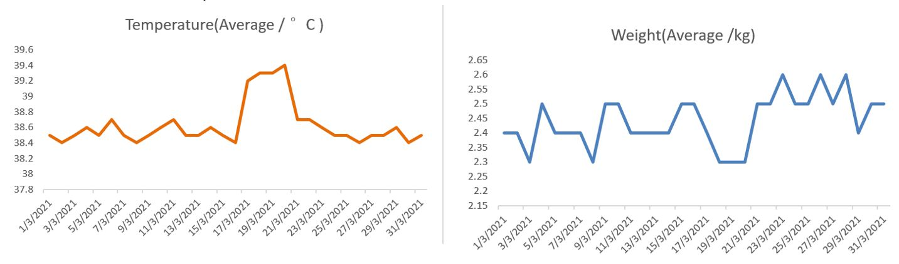

<!DOCTYPE html>

<html xmlns="http://www.w3.org/1999/xhtml" lang="" xml:lang="">

<head>
  <meta charset="utf-8"/>
  <meta name="viewport" content="width=device-width, initial-scale=1"/>
  <meta http-equiv="X-UA-Compatible" content="IE=Edge,chrome=1"/>
  <meta name="generator" content="distill" />

  <style type="text/css">
  /* Hide doc at startup (prevent jankiness while JS renders/transforms) */
  body {
    visibility: hidden;
  }
  </style>

 <!--radix_placeholder_import_source-->
 <!--/radix_placeholder_import_source-->

<style type="text/css">code{white-space: pre;}</style>
<style type="text/css" data-origin="pandoc">
pre > code.sourceCode { white-space: pre; position: relative; }
pre > code.sourceCode > span { display: inline-block; line-height: 1.25; }
pre > code.sourceCode > span:empty { height: 1.2em; }
.sourceCode { overflow: visible; }
code.sourceCode > span { color: inherit; text-decoration: inherit; }
div.sourceCode { margin: 1em 0; }
pre.sourceCode { margin: 0; }
@media screen {
div.sourceCode { overflow: auto; }
}
@media print {
pre > code.sourceCode { white-space: pre-wrap; }
pre > code.sourceCode > span { text-indent: -5em; padding-left: 5em; }
}
pre.numberSource code
  { counter-reset: source-line 0; }
pre.numberSource code > span
  { position: relative; left: -4em; counter-increment: source-line; }
pre.numberSource code > span > a:first-child::before
  { content: counter(source-line);
    position: relative; left: -1em; text-align: right; vertical-align: baseline;
    border: none; display: inline-block;
    -webkit-touch-callout: none; -webkit-user-select: none;
    -khtml-user-select: none; -moz-user-select: none;
    -ms-user-select: none; user-select: none;
    padding: 0 4px; width: 4em;
    color: #aaaaaa;
  }
pre.numberSource { margin-left: 3em; border-left: 1px solid #aaaaaa;  padding-left: 4px; }
div.sourceCode
  {   }
@media screen {
pre > code.sourceCode > span > a:first-child::before { text-decoration: underline; }
}
code span.al { color: #ad0000; } /* Alert */
code span.an { color: #5e5e5e; } /* Annotation */
code span.at { color: #20794d; } /* Attribute */
code span.bn { color: #ad0000; } /* BaseN */
code span.bu { } /* BuiltIn */
code span.cf { color: #007ba5; } /* ControlFlow */
code span.ch { color: #20794d; } /* Char */
code span.cn { color: #8f5902; } /* Constant */
code span.co { color: #5e5e5e; } /* Comment */
code span.cv { color: #5e5e5e; font-style: italic; } /* CommentVar */
code span.do { color: #5e5e5e; font-style: italic; } /* Documentation */
code span.dt { color: #ad0000; } /* DataType */
code span.dv { color: #ad0000; } /* DecVal */
code span.er { color: #ad0000; } /* Error */
code span.ex { } /* Extension */
code span.fl { color: #ad0000; } /* Float */
code span.fu { color: #4758ab; } /* Function */
code span.im { } /* Import */
code span.in { color: #5e5e5e; } /* Information */
code span.kw { color: #007ba5; } /* Keyword */
code span.op { color: #5e5e5e; } /* Operator */
code span.ot { color: #007ba5; } /* Other */
code span.pp { color: #ad0000; } /* Preprocessor */
code span.sc { color: #20794d; } /* SpecialChar */
code span.ss { color: #20794d; } /* SpecialString */
code span.st { color: #20794d; } /* String */
code span.va { color: #111111; } /* Variable */
code span.vs { color: #20794d; } /* VerbatimString */
code span.wa { color: #5e5e5e; font-style: italic; } /* Warning */
</style>

  <!--radix_placeholder_meta_tags-->
<title>Jiayi Wang World: IoT-CatYou</title>

<meta property="description" itemprop="description" content="A Remote Cat Feeding and Caring System."/>


<!--  https://schema.org/Article -->
<meta property="article:published" itemprop="datePublished" content="2021-04-26"/>
<meta property="article:created" itemprop="dateCreated" content="2021-04-26"/>
<meta name="article:author" content="Jiayi Wang"/>

<!--  https://developers.facebook.com/docs/sharing/webmasters#markup -->
<meta property="og:title" content="Jiayi Wang World: IoT-CatYou"/>
<meta property="og:type" content="article"/>
<meta property="og:description" content="A Remote Cat Feeding and Caring System."/>
<meta property="og:locale" content="en_US"/>
<meta property="og:site_name" content="Jiayi Wang World"/>

<!--  https://dev.twitter.com/cards/types/summary -->
<meta property="twitter:card" content="summary"/>
<meta property="twitter:title" content="Jiayi Wang World: IoT-CatYou"/>
<meta property="twitter:description" content="A Remote Cat Feeding and Caring System."/>

<!--/radix_placeholder_meta_tags-->
  <!--radix_placeholder_rmarkdown_metadata-->

<script type="text/json" id="radix-rmarkdown-metadata">
{"type":"list","attributes":{"names":{"type":"character","attributes":{},"value":["title","description","author","date","output"]}},"value":[{"type":"character","attributes":{},"value":["IoT-CatYou"]},{"type":"character","attributes":{},"value":["A Remote Cat Feeding and Caring System."]},{"type":"list","attributes":{},"value":[{"type":"list","attributes":{"names":{"type":"character","attributes":{},"value":["name","url"]}},"value":[{"type":"character","attributes":{},"value":["Jiayi Wang"]},{"type":"character","attributes":{},"value":["https://www.linkedin.com/in/jiayi-wang-smu/"]}]}]},{"type":"character","attributes":{},"value":["04-26-2021"]},{"type":"list","attributes":{"names":{"type":"character","attributes":{},"value":["distill::distill_article"]}},"value":[{"type":"list","attributes":{"names":{"type":"character","attributes":{},"value":["self_contained","toc"]}},"value":[{"type":"logical","attributes":{},"value":[false]},{"type":"logical","attributes":{},"value":[true]}]}]}]}
</script>
<!--/radix_placeholder_rmarkdown_metadata-->
  
  <script type="text/json" id="radix-resource-manifest">
  {"type":"character","attributes":{},"value":["img/img1.png","img/img2.jpg","img/img3.jpg","img/img4.jpg","img/img5.jpg","img/img6.jpg","img/img7.jpg","img/img7.png","img/img8.jpg","img/img8.png","img/img9.jpg","img/img9.png","img/IOT.mp4","iot-catyou_files/anchor-4.2.2/anchor.min.js","iot-catyou_files/bowser-1.9.3/bowser.min.js","iot-catyou_files/distill-2.2.21/template.v2.js","iot-catyou_files/header-attrs-2.9/header-attrs.js","iot-catyou_files/jquery-1.11.3/jquery.min.js","iot-catyou_files/popper-2.6.0/popper.min.js","iot-catyou_files/tippy-6.2.7/tippy-bundle.umd.min.js","iot-catyou_files/tippy-6.2.7/tippy-light-border.css","iot-catyou_files/tippy-6.2.7/tippy.css","iot-catyou_files/tippy-6.2.7/tippy.umd.min.js","iot-catyou_files/webcomponents-2.0.0/webcomponents.js"]}
  </script>
  <!--radix_placeholder_navigation_in_header-->
<meta name="distill:offset" content="../.."/>

<script type="application/javascript">

  window.headroom_prevent_pin = false;

  window.document.addEventListener("DOMContentLoaded", function (event) {

    // initialize headroom for banner
    var header = $('header').get(0);
    var headerHeight = header.offsetHeight;
    var headroom = new Headroom(header, {
      tolerance: 5,
      onPin : function() {
        if (window.headroom_prevent_pin) {
          window.headroom_prevent_pin = false;
          headroom.unpin();
        }
      }
    });
    headroom.init();
    if(window.location.hash)
      headroom.unpin();
    $(header).addClass('headroom--transition');

    // offset scroll location for banner on hash change
    // (see: https://github.com/WickyNilliams/headroom.js/issues/38)
    window.addEventListener("hashchange", function(event) {
      window.scrollTo(0, window.pageYOffset - (headerHeight + 25));
    });

    // responsive menu
    $('.distill-site-header').each(function(i, val) {
      var topnav = $(this);
      var toggle = topnav.find('.nav-toggle');
      toggle.on('click', function() {
        topnav.toggleClass('responsive');
      });
    });

    // nav dropdowns
    $('.nav-dropbtn').click(function(e) {
      $(this).next('.nav-dropdown-content').toggleClass('nav-dropdown-active');
      $(this).parent().siblings('.nav-dropdown')
         .children('.nav-dropdown-content').removeClass('nav-dropdown-active');
    });
    $("body").click(function(e){
      $('.nav-dropdown-content').removeClass('nav-dropdown-active');
    });
    $(".nav-dropdown").click(function(e){
      e.stopPropagation();
    });
  });
</script>

<style type="text/css">

/* Theme (user-documented overrideables for nav appearance) */

.distill-site-nav {
  color: rgba(255, 255, 255, 0.8);
  background-color: #0F2E3D;
  font-size: 15px;
  font-weight: 300;
}

.distill-site-nav a {
  color: inherit;
  text-decoration: none;
}

.distill-site-nav a:hover {
  color: white;
}

@media print {
  .distill-site-nav {
    display: none;
  }
}

.distill-site-header {

}

.distill-site-footer {

}


/* Site Header */

.distill-site-header {
  width: 100%;
  box-sizing: border-box;
  z-index: 3;
}

.distill-site-header .nav-left {
  display: inline-block;
  margin-left: 8px;
}

@media screen and (max-width: 768px) {
  .distill-site-header .nav-left {
    margin-left: 0;
  }
}


.distill-site-header .nav-right {
  float: right;
  margin-right: 8px;
}

.distill-site-header a,
.distill-site-header .title {
  display: inline-block;
  text-align: center;
  padding: 14px 10px 14px 10px;
}

.distill-site-header .title {
  font-size: 18px;
  min-width: 150px;
}

.distill-site-header .logo {
  padding: 0;
}

.distill-site-header .logo img {
  display: none;
  max-height: 20px;
  width: auto;
  margin-bottom: -4px;
}

.distill-site-header .nav-image img {
  max-height: 18px;
  width: auto;
  display: inline-block;
  margin-bottom: -3px;
}


@media screen and (min-width: 1000px) {
  .distill-site-header .logo img {
    display: inline-block;
  }
  .distill-site-header .nav-left {
    margin-left: 20px;
  }
  .distill-site-header .nav-right {
    margin-right: 20px;
  }
  .distill-site-header .title {
    padding-left: 12px;
  }
}


.distill-site-header .nav-toggle {
  display: none;
}

.nav-dropdown {
  display: inline-block;
  position: relative;
}

.nav-dropdown .nav-dropbtn {
  border: none;
  outline: none;
  color: rgba(255, 255, 255, 0.8);
  padding: 16px 10px;
  background-color: transparent;
  font-family: inherit;
  font-size: inherit;
  font-weight: inherit;
  margin: 0;
  margin-top: 1px;
  z-index: 2;
}

.nav-dropdown-content {
  display: none;
  position: absolute;
  background-color: white;
  min-width: 200px;
  border: 1px solid rgba(0,0,0,0.15);
  border-radius: 4px;
  box-shadow: 0px 8px 16px 0px rgba(0,0,0,0.1);
  z-index: 1;
  margin-top: 2px;
  white-space: nowrap;
  padding-top: 4px;
  padding-bottom: 4px;
}

.nav-dropdown-content hr {
  margin-top: 4px;
  margin-bottom: 4px;
  border: none;
  border-bottom: 1px solid rgba(0, 0, 0, 0.1);
}

.nav-dropdown-active {
  display: block;
}

.nav-dropdown-content a, .nav-dropdown-content .nav-dropdown-header {
  color: black;
  padding: 6px 24px;
  text-decoration: none;
  display: block;
  text-align: left;
}

.nav-dropdown-content .nav-dropdown-header {
  display: block;
  padding: 5px 24px;
  padding-bottom: 0;
  text-transform: uppercase;
  font-size: 14px;
  color: #999999;
  white-space: nowrap;
}

.nav-dropdown:hover .nav-dropbtn {
  color: white;
}

.nav-dropdown-content a:hover {
  background-color: #ddd;
  color: black;
}

.nav-right .nav-dropdown-content {
  margin-left: -45%;
  right: 0;
}

@media screen and (max-width: 768px) {
  .distill-site-header a, .distill-site-header .nav-dropdown  {display: none;}
  .distill-site-header a.nav-toggle {
    float: right;
    display: block;
  }
  .distill-site-header .title {
    margin-left: 0;
  }
  .distill-site-header .nav-right {
    margin-right: 0;
  }
  .distill-site-header {
    overflow: hidden;
  }
  .nav-right .nav-dropdown-content {
    margin-left: 0;
  }
}


@media screen and (max-width: 768px) {
  .distill-site-header.responsive {position: relative; min-height: 500px; }
  .distill-site-header.responsive a.nav-toggle {
    position: absolute;
    right: 0;
    top: 0;
  }
  .distill-site-header.responsive a,
  .distill-site-header.responsive .nav-dropdown {
    display: block;
    text-align: left;
  }
  .distill-site-header.responsive .nav-left,
  .distill-site-header.responsive .nav-right {
    width: 100%;
  }
  .distill-site-header.responsive .nav-dropdown {float: none;}
  .distill-site-header.responsive .nav-dropdown-content {position: relative;}
  .distill-site-header.responsive .nav-dropdown .nav-dropbtn {
    display: block;
    width: 100%;
    text-align: left;
  }
}

/* Site Footer */

.distill-site-footer {
  width: 100%;
  overflow: hidden;
  box-sizing: border-box;
  z-index: 3;
  margin-top: 30px;
  padding-top: 30px;
  padding-bottom: 30px;
  text-align: center;
}

/* Headroom */

d-title {
  padding-top: 6rem;
}

@media print {
  d-title {
    padding-top: 4rem;
  }
}

.headroom {
  z-index: 1000;
  position: fixed;
  top: 0;
  left: 0;
  right: 0;
}

.headroom--transition {
  transition: all .4s ease-in-out;
}

.headroom--unpinned {
  top: -100px;
}

.headroom--pinned {
  top: 0;
}

/* adjust viewport for navbar height */
/* helps vertically center bootstrap (non-distill) content */
.min-vh-100 {
  min-height: calc(100vh - 100px) !important;
}

</style>

<script src="../../site_libs/jquery-1.11.3/jquery.min.js"></script>
<link href="../../site_libs/font-awesome-5.1.0/css/all.css" rel="stylesheet"/>
<link href="../../site_libs/font-awesome-5.1.0/css/v4-shims.css" rel="stylesheet"/>
<script src="../../site_libs/headroom-0.9.4/headroom.min.js"></script>
<script src="../../site_libs/autocomplete-0.37.1/autocomplete.min.js"></script>
<script src="../../site_libs/fuse-6.4.1/fuse.min.js"></script>

<script type="application/javascript">

function getMeta(metaName) {
  var metas = document.getElementsByTagName('meta');
  for (let i = 0; i < metas.length; i++) {
    if (metas[i].getAttribute('name') === metaName) {
      return metas[i].getAttribute('content');
    }
  }
  return '';
}

function offsetURL(url) {
  var offset = getMeta('distill:offset');
  return offset ? offset + '/' + url : url;
}

function createFuseIndex() {

  // create fuse index
  var options = {
    keys: [
      { name: 'title', weight: 20 },
      { name: 'categories', weight: 15 },
      { name: 'description', weight: 10 },
      { name: 'contents', weight: 5 },
    ],
    ignoreLocation: true,
    threshold: 0
  };
  var fuse = new window.Fuse([], options);

  // fetch the main search.json
  return fetch(offsetURL('search.json'))
    .then(function(response) {
      if (response.status == 200) {
        return response.json().then(function(json) {
          // index main articles
          json.articles.forEach(function(article) {
            fuse.add(article);
          });
          // download collections and index their articles
          return Promise.all(json.collections.map(function(collection) {
            return fetch(offsetURL(collection)).then(function(response) {
              if (response.status === 200) {
                return response.json().then(function(articles) {
                  articles.forEach(function(article) {
                    fuse.add(article);
                  });
                })
              } else {
                return Promise.reject(
                  new Error('Unexpected status from search index request: ' +
                            response.status)
                );
              }
            });
          })).then(function() {
            return fuse;
          });
        });

      } else {
        return Promise.reject(
          new Error('Unexpected status from search index request: ' +
                      response.status)
        );
      }
    });
}

window.document.addEventListener("DOMContentLoaded", function (event) {

  // get search element (bail if we don't have one)
  var searchEl = window.document.getElementById('distill-search');
  if (!searchEl)
    return;

  createFuseIndex()
    .then(function(fuse) {

      // make search box visible
      searchEl.classList.remove('hidden');

      // initialize autocomplete
      var options = {
        autoselect: true,
        hint: false,
        minLength: 2,
      };
      window.autocomplete(searchEl, options, [{
        source: function(query, callback) {
          const searchOptions = {
            isCaseSensitive: false,
            shouldSort: true,
            minMatchCharLength: 2,
            limit: 10,
          };
          var results = fuse.search(query, searchOptions);
          callback(results
            .map(function(result) { return result.item; })
          );
        },
        templates: {
          suggestion: function(suggestion) {
            var img = suggestion.preview && Object.keys(suggestion.preview).length > 0
              ? ``
              : '';
            var html = `
              <div class="search-item">
                <h3>${suggestion.title}</h3>
                <div class="search-item-description">
                  ${suggestion.description || ''}
                </div>
                <div class="search-item-preview">
                  ${img}
                </div>
              </div>
            `;
            return html;
          }
        }
      }]).on('autocomplete:selected', function(event, suggestion) {
        window.location.href = offsetURL(suggestion.path);
      });
      // remove inline display style on autocompleter (we want to
      // manage responsive display via css)
      $('.algolia-autocomplete').css("display", "");
    })
    .catch(function(error) {
      console.log(error);
    });

});

</script>

<style type="text/css">

.nav-search {
  font-size: x-small;
}

/* Algolioa Autocomplete */

.algolia-autocomplete {
  display: inline-block;
  margin-left: 10px;
  vertical-align: sub;
  background-color: white;
  color: black;
  padding: 6px;
  padding-top: 8px;
  padding-bottom: 0;
  border-radius: 6px;
  border: 1px #0F2E3D solid;
  width: 180px;
}


@media screen and (max-width: 768px) {
  .distill-site-nav .algolia-autocomplete {
    display: none;
    visibility: hidden;
  }
  .distill-site-nav.responsive .algolia-autocomplete {
    display: inline-block;
    visibility: visible;
  }
  .distill-site-nav.responsive .algolia-autocomplete .aa-dropdown-menu {
    margin-left: 0;
    width: 400px;
    max-height: 400px;
  }
}

.algolia-autocomplete .aa-input, .algolia-autocomplete .aa-hint {
  width: 90%;
  outline: none;
  border: none;
}

.algolia-autocomplete .aa-hint {
  color: #999;
}
.algolia-autocomplete .aa-dropdown-menu {
  width: 550px;
  max-height: 70vh;
  overflow-x: visible;
  overflow-y: scroll;
  padding: 5px;
  margin-top: 3px;
  margin-left: -150px;
  background-color: #fff;
  border-radius: 5px;
  border: 1px solid #999;
  border-top: none;
}

.algolia-autocomplete .aa-dropdown-menu .aa-suggestion {
  cursor: pointer;
  padding: 5px 4px;
  border-bottom: 1px solid #eee;
}

.algolia-autocomplete .aa-dropdown-menu .aa-suggestion:last-of-type {
  border-bottom: none;
  margin-bottom: 2px;
}

.algolia-autocomplete .aa-dropdown-menu .aa-suggestion .search-item {
  overflow: hidden;
  font-size: 0.8em;
  line-height: 1.4em;
}

.algolia-autocomplete .aa-dropdown-menu .aa-suggestion .search-item h3 {
  font-size: 1rem;
  margin-block-start: 0;
  margin-block-end: 5px;
}

.algolia-autocomplete .aa-dropdown-menu .aa-suggestion .search-item-description {
  display: inline-block;
  overflow: hidden;
  height: 2.8em;
  width: 80%;
  margin-right: 4%;
}

.algolia-autocomplete .aa-dropdown-menu .aa-suggestion .search-item-preview {
  display: inline-block;
  width: 15%;
}

.algolia-autocomplete .aa-dropdown-menu .aa-suggestion .search-item-preview img {
  height: 3em;
  width: auto;
  display: none;
}

.algolia-autocomplete .aa-dropdown-menu .aa-suggestion .search-item-preview img[src] {
  display: initial;
}

.algolia-autocomplete .aa-dropdown-menu .aa-suggestion.aa-cursor {
  background-color: #eee;
}
.algolia-autocomplete .aa-dropdown-menu .aa-suggestion em {
  font-weight: bold;
  font-style: normal;
}

</style>


<!--/radix_placeholder_navigation_in_header-->
  <!--radix_placeholder_distill-->

<style type="text/css">

body {
  background-color: white;
}

.pandoc-table {
  width: 100%;
}

.pandoc-table>caption {
  margin-bottom: 10px;
}

.pandoc-table th:not([align]) {
  text-align: left;
}

.pagedtable-footer {
  font-size: 15px;
}

d-byline .byline {
  grid-template-columns: 2fr 2fr;
}

d-byline .byline h3 {
  margin-block-start: 1.5em;
}

d-byline .byline .authors-affiliations h3 {
  margin-block-start: 0.5em;
}

.authors-affiliations .orcid-id {
  width: 16px;
  height:16px;
  margin-left: 4px;
  margin-right: 4px;
  vertical-align: middle;
  padding-bottom: 2px;
}

d-title .dt-tags {
  margin-top: 1em;
  grid-column: text;
}

.dt-tags .dt-tag {
  text-decoration: none;
  display: inline-block;
  color: rgba(0,0,0,0.6);
  padding: 0em 0.4em;
  margin-right: 0.5em;
  margin-bottom: 0.4em;
  font-size: 70%;
  border: 1px solid rgba(0,0,0,0.2);
  border-radius: 3px;
  text-transform: uppercase;
  font-weight: 500;
}

d-article table.gt_table td,
d-article table.gt_table th {
  border-bottom: none;
}

.html-widget {
  margin-bottom: 2.0em;
}

.l-screen-inset {
  padding-right: 16px;
}

.l-screen .caption {
  margin-left: 10px;
}

.shaded {
  background: rgb(247, 247, 247);
  padding-top: 20px;
  padding-bottom: 20px;
  border-top: 1px solid rgba(0, 0, 0, 0.1);
  border-bottom: 1px solid rgba(0, 0, 0, 0.1);
}

.shaded .html-widget {
  margin-bottom: 0;
  border: 1px solid rgba(0, 0, 0, 0.1);
}

.shaded .shaded-content {
  background: white;
}

.text-output {
  margin-top: 0;
  line-height: 1.5em;
}

.hidden {
  display: none !important;
}

d-article {
  padding-top: 2.5rem;
  padding-bottom: 30px;
}

d-appendix {
  padding-top: 30px;
}

d-article>p>img {
  width: 100%;
}

d-article h2 {
  margin: 1rem 0 1.5rem 0;
}

d-article h3 {
  margin-top: 1.5rem;
}

d-article iframe {
  border: 1px solid rgba(0, 0, 0, 0.1);
  margin-bottom: 2.0em;
  width: 100%;
}

/* Tweak code blocks */

d-article div.sourceCode code,
d-article pre code {
  font-family: Consolas, Monaco, 'Andale Mono', 'Ubuntu Mono', monospace;
}

d-article pre,
d-article div.sourceCode,
d-article div.sourceCode pre {
  overflow: auto;
}

d-article div.sourceCode {
  background-color: white;
}

d-article div.sourceCode pre {
  padding-left: 10px;
  font-size: 12px;
  border-left: 2px solid rgba(0,0,0,0.1);
}

d-article pre {
  font-size: 12px;
  color: black;
  background: none;
  margin-top: 0;
  text-align: left;
  white-space: pre;
  word-spacing: normal;
  word-break: normal;
  word-wrap: normal;
  line-height: 1.5;

  -moz-tab-size: 4;
  -o-tab-size: 4;
  tab-size: 4;

  -webkit-hyphens: none;
  -moz-hyphens: none;
  -ms-hyphens: none;
  hyphens: none;
}

d-article pre a {
  border-bottom: none;
}

d-article pre a:hover {
  border-bottom: none;
  text-decoration: underline;
}

d-article details {
  grid-column: text;
  margin-bottom: 0.8em;
}

@media(min-width: 768px) {

d-article pre,
d-article div.sourceCode,
d-article div.sourceCode pre {
  overflow: visible !important;
}

d-article div.sourceCode pre {
  padding-left: 18px;
  font-size: 14px;
}

d-article pre {
  font-size: 14px;
}

}

figure img.external {
  background: white;
  border: 1px solid rgba(0, 0, 0, 0.1);
  box-shadow: 0 1px 8px rgba(0, 0, 0, 0.1);
  padding: 18px;
  box-sizing: border-box;
}

/* CSS for d-contents */

.d-contents {
  grid-column: text;
  color: rgba(0,0,0,0.8);
  font-size: 0.9em;
  padding-bottom: 1em;
  margin-bottom: 1em;
  padding-bottom: 0.5em;
  margin-bottom: 1em;
  padding-left: 0.25em;
  justify-self: start;
}

@media(min-width: 1000px) {
  .d-contents.d-contents-float {
    height: 0;
    grid-column-start: 1;
    grid-column-end: 4;
    justify-self: center;
    padding-right: 3em;
    padding-left: 2em;
  }
}

.d-contents nav h3 {
  font-size: 18px;
  margin-top: 0;
  margin-bottom: 1em;
}

.d-contents li {
  list-style-type: none
}

.d-contents nav > ul {
  padding-left: 0;
}

.d-contents ul {
  padding-left: 1em
}

.d-contents nav ul li {
  margin-top: 0.6em;
  margin-bottom: 0.2em;
}

.d-contents nav a {
  font-size: 13px;
  border-bottom: none;
  text-decoration: none
  color: rgba(0, 0, 0, 0.8);
}

.d-contents nav a:hover {
  text-decoration: underline solid rgba(0, 0, 0, 0.6)
}

.d-contents nav > ul > li > a {
  font-weight: 600;
}

.d-contents nav > ul > li > ul {
  font-weight: inherit;
}

.d-contents nav > ul > li > ul > li {
  margin-top: 0.2em;
}


.d-contents nav ul {
  margin-top: 0;
  margin-bottom: 0.25em;
}

.d-article-with-toc h2:nth-child(2) {
  margin-top: 0;
}


/* Figure */

.figure {
  position: relative;
  margin-bottom: 2.5em;
  margin-top: 1.5em;
}

.figure img {
  width: 100%;
}

.figure .caption {
  color: rgba(0, 0, 0, 0.6);
  font-size: 12px;
  line-height: 1.5em;
}

.figure img.external {
  background: white;
  border: 1px solid rgba(0, 0, 0, 0.1);
  box-shadow: 0 1px 8px rgba(0, 0, 0, 0.1);
  padding: 18px;
  box-sizing: border-box;
}

.figure .caption a {
  color: rgba(0, 0, 0, 0.6);
}

.figure .caption b,
.figure .caption strong, {
  font-weight: 600;
  color: rgba(0, 0, 0, 1.0);
}

/* Citations */

d-article .citation {
  color: inherit;
  cursor: inherit;
}

div.hanging-indent{
  margin-left: 1em; text-indent: -1em;
}

/* Citation hover box */

.tippy-box[data-theme~=light-border] {
  background-color: rgba(250, 250, 250, 0.95);
}

.tippy-content > p {
  margin-bottom: 0;
  padding: 2px;
}


/* Tweak 1000px media break to show more text */

@media(min-width: 1000px) {
  .base-grid,
  distill-header,
  d-title,
  d-abstract,
  d-article,
  d-appendix,
  distill-appendix,
  d-byline,
  d-footnote-list,
  d-citation-list,
  distill-footer {
    grid-template-columns: [screen-start] 1fr [page-start kicker-start] 80px [middle-start] 50px [text-start kicker-end] 65px 65px 65px 65px 65px 65px 65px 65px [text-end gutter-start] 65px [middle-end] 65px [page-end gutter-end] 1fr [screen-end];
    grid-column-gap: 16px;
  }

  .grid {
    grid-column-gap: 16px;
  }

  d-article {
    font-size: 1.06rem;
    line-height: 1.7em;
  }
  figure .caption, .figure .caption, figure figcaption {
    font-size: 13px;
  }
}

@media(min-width: 1180px) {
  .base-grid,
  distill-header,
  d-title,
  d-abstract,
  d-article,
  d-appendix,
  distill-appendix,
  d-byline,
  d-footnote-list,
  d-citation-list,
  distill-footer {
    grid-template-columns: [screen-start] 1fr [page-start kicker-start] 60px [middle-start] 60px [text-start kicker-end] 60px 60px 60px 60px 60px 60px 60px 60px [text-end gutter-start] 60px [middle-end] 60px [page-end gutter-end] 1fr [screen-end];
    grid-column-gap: 32px;
  }

  .grid {
    grid-column-gap: 32px;
  }
}


/* Get the citation styles for the appendix (not auto-injected on render since
   we do our own rendering of the citation appendix) */

d-appendix .citation-appendix,
.d-appendix .citation-appendix {
  font-size: 11px;
  line-height: 15px;
  border-left: 1px solid rgba(0, 0, 0, 0.1);
  padding-left: 18px;
  border: 1px solid rgba(0,0,0,0.1);
  background: rgba(0, 0, 0, 0.02);
  padding: 10px 18px;
  border-radius: 3px;
  color: rgba(150, 150, 150, 1);
  overflow: hidden;
  margin-top: -12px;
  white-space: pre-wrap;
  word-wrap: break-word;
}

/* Include appendix styles here so they can be overridden */

d-appendix {
  contain: layout style;
  font-size: 0.8em;
  line-height: 1.7em;
  margin-top: 60px;
  margin-bottom: 0;
  border-top: 1px solid rgba(0, 0, 0, 0.1);
  color: rgba(0,0,0,0.5);
  padding-top: 60px;
  padding-bottom: 48px;
}

d-appendix h3 {
  grid-column: page-start / text-start;
  font-size: 15px;
  font-weight: 500;
  margin-top: 1em;
  margin-bottom: 0;
  color: rgba(0,0,0,0.65);
}

d-appendix h3 + * {
  margin-top: 1em;
}

d-appendix ol {
  padding: 0 0 0 15px;
}

@media (min-width: 768px) {
  d-appendix ol {
    padding: 0 0 0 30px;
    margin-left: -30px;
  }
}

d-appendix li {
  margin-bottom: 1em;
}

d-appendix a {
  color: rgba(0, 0, 0, 0.6);
}

d-appendix > * {
  grid-column: text;
}

d-appendix > d-footnote-list,
d-appendix > d-citation-list,
d-appendix > distill-appendix {
  grid-column: screen;
}

/* Include footnote styles here so they can be overridden */

d-footnote-list {
  contain: layout style;
}

d-footnote-list > * {
  grid-column: text;
}

d-footnote-list a.footnote-backlink {
  color: rgba(0,0,0,0.3);
  padding-left: 0.5em;
}


/* Anchor.js */

.anchorjs-link {
  /*transition: all .25s linear; */
  text-decoration: none;
  border-bottom: none;
}
*:hover > .anchorjs-link {
  margin-left: -1.125em !important;
  text-decoration: none;
  border-bottom: none;
}

/* Social footer */

.social_footer {
  margin-top: 30px;
  margin-bottom: 0;
  color: rgba(0,0,0,0.67);
}

.disqus-comments {
  margin-right: 30px;
}

.disqus-comment-count {
  border-bottom: 1px solid rgba(0, 0, 0, 0.4);
  cursor: pointer;
}

#disqus_thread {
  margin-top: 30px;
}

.article-sharing a {
  border-bottom: none;
  margin-right: 8px;
}

.article-sharing a:hover {
  border-bottom: none;
}

.sidebar-section.subscribe {
  font-size: 12px;
  line-height: 1.6em;
}

.subscribe p {
  margin-bottom: 0.5em;
}


.article-footer .subscribe {
  font-size: 15px;
  margin-top: 45px;
}


.sidebar-section.custom {
  font-size: 12px;
  line-height: 1.6em;
}

.custom p {
  margin-bottom: 0.5em;
}

/* Styles for listing layout (hide title) */
.layout-listing d-title, .layout-listing .d-title {
  display: none;
}

/* Styles for posts lists (not auto-injected) */


.posts-with-sidebar {
  padding-left: 45px;
  padding-right: 45px;
}

.posts-list .description h2,
.posts-list .description p {
  font-family: -apple-system, BlinkMacSystemFont, "Segoe UI", Roboto, Oxygen, Ubuntu, Cantarell, "Fira Sans", "Droid Sans", "Helvetica Neue", Arial, sans-serif;
}

.posts-list .description h2 {
  font-weight: 700;
  border-bottom: none;
  padding-bottom: 0;
}

.posts-list h2.post-tag {
  border-bottom: 1px solid rgba(0, 0, 0, 0.2);
  padding-bottom: 12px;
}
.posts-list {
  margin-top: 60px;
  margin-bottom: 24px;
}

.posts-list .post-preview {
  text-decoration: none;
  overflow: hidden;
  display: block;
  border-bottom: 1px solid rgba(0, 0, 0, 0.1);
  padding: 24px 0;
}

.post-preview-last {
  border-bottom: none !important;
}

.posts-list .posts-list-caption {
  grid-column: screen;
  font-weight: 400;
}

.posts-list .post-preview h2 {
  margin: 0 0 6px 0;
  line-height: 1.2em;
  font-style: normal;
  font-size: 24px;
}

.posts-list .post-preview p {
  margin: 0 0 12px 0;
  line-height: 1.4em;
  font-size: 16px;
}

.posts-list .post-preview .thumbnail {
  box-sizing: border-box;
  margin-bottom: 24px;
  position: relative;
  max-width: 500px;
}
.posts-list .post-preview img {
  width: 100%;
  display: block;
}

.posts-list .metadata {
  font-size: 12px;
  line-height: 1.4em;
  margin-bottom: 18px;
}

.posts-list .metadata > * {
  display: inline-block;
}

.posts-list .metadata .publishedDate {
  margin-right: 2em;
}

.posts-list .metadata .dt-authors {
  display: block;
  margin-top: 0.3em;
  margin-right: 2em;
}

.posts-list .dt-tags {
  display: block;
  line-height: 1em;
}

.posts-list .dt-tags .dt-tag {
  display: inline-block;
  color: rgba(0,0,0,0.6);
  padding: 0.3em 0.4em;
  margin-right: 0.2em;
  margin-bottom: 0.4em;
  font-size: 60%;
  border: 1px solid rgba(0,0,0,0.2);
  border-radius: 3px;
  text-transform: uppercase;
  font-weight: 500;
}

.posts-list img {
  opacity: 1;
}

.posts-list img[data-src] {
  opacity: 0;
}

.posts-more {
  clear: both;
}


.posts-sidebar {
  font-size: 16px;
}

.posts-sidebar h3 {
  font-size: 16px;
  margin-top: 0;
  margin-bottom: 0.5em;
  font-weight: 400;
  text-transform: uppercase;
}

.sidebar-section {
  margin-bottom: 30px;
}

.categories ul {
  list-style-type: none;
  margin: 0;
  padding: 0;
}

.categories li {
  color: rgba(0, 0, 0, 0.8);
  margin-bottom: 0;
}

.categories li>a {
  border-bottom: none;
}

.categories li>a:hover {
  border-bottom: 1px solid rgba(0, 0, 0, 0.4);
}

.categories .active {
  font-weight: 600;
}

.categories .category-count {
  color: rgba(0, 0, 0, 0.4);
}


@media(min-width: 768px) {
  .posts-list .post-preview h2 {
    font-size: 26px;
  }
  .posts-list .post-preview .thumbnail {
    float: right;
    width: 30%;
    margin-bottom: 0;
  }
  .posts-list .post-preview .description {
    float: left;
    width: 45%;
  }
  .posts-list .post-preview .metadata {
    float: left;
    width: 20%;
    margin-top: 8px;
  }
  .posts-list .post-preview p {
    margin: 0 0 12px 0;
    line-height: 1.5em;
    font-size: 16px;
  }
  .posts-with-sidebar .posts-list {
    float: left;
    width: 75%;
  }
  .posts-with-sidebar .posts-sidebar {
    float: right;
    width: 20%;
    margin-top: 60px;
    padding-top: 24px;
    padding-bottom: 24px;
  }
}


/* Improve display for browsers without grid (IE/Edge <= 15) */

.downlevel {
  line-height: 1.6em;
  font-family: -apple-system, BlinkMacSystemFont, "Segoe UI", Roboto, Oxygen, Ubuntu, Cantarell, "Fira Sans", "Droid Sans", "Helvetica Neue", Arial, sans-serif;
  margin: 0;
}

.downlevel .d-title {
  padding-top: 6rem;
  padding-bottom: 1.5rem;
}

.downlevel .d-title h1 {
  font-size: 50px;
  font-weight: 700;
  line-height: 1.1em;
  margin: 0 0 0.5rem;
}

.downlevel .d-title p {
  font-weight: 300;
  font-size: 1.2rem;
  line-height: 1.55em;
  margin-top: 0;
}

.downlevel .d-byline {
  padding-top: 0.8em;
  padding-bottom: 0.8em;
  font-size: 0.8rem;
  line-height: 1.8em;
}

.downlevel .section-separator {
  border: none;
  border-top: 1px solid rgba(0, 0, 0, 0.1);
}

.downlevel .d-article {
  font-size: 1.06rem;
  line-height: 1.7em;
  padding-top: 1rem;
  padding-bottom: 2rem;
}


.downlevel .d-appendix {
  padding-left: 0;
  padding-right: 0;
  max-width: none;
  font-size: 0.8em;
  line-height: 1.7em;
  margin-bottom: 0;
  color: rgba(0,0,0,0.5);
  padding-top: 40px;
  padding-bottom: 48px;
}

.downlevel .footnotes ol {
  padding-left: 13px;
}

.downlevel .base-grid,
.downlevel .distill-header,
.downlevel .d-title,
.downlevel .d-abstract,
.downlevel .d-article,
.downlevel .d-appendix,
.downlevel .distill-appendix,
.downlevel .d-byline,
.downlevel .d-footnote-list,
.downlevel .d-citation-list,
.downlevel .distill-footer,
.downlevel .appendix-bottom,
.downlevel .posts-container {
  padding-left: 40px;
  padding-right: 40px;
}

@media(min-width: 768px) {
  .downlevel .base-grid,
  .downlevel .distill-header,
  .downlevel .d-title,
  .downlevel .d-abstract,
  .downlevel .d-article,
  .downlevel .d-appendix,
  .downlevel .distill-appendix,
  .downlevel .d-byline,
  .downlevel .d-footnote-list,
  .downlevel .d-citation-list,
  .downlevel .distill-footer,
  .downlevel .appendix-bottom,
  .downlevel .posts-container {
  padding-left: 150px;
  padding-right: 150px;
  max-width: 900px;
}
}

.downlevel pre code {
  display: block;
  border-left: 2px solid rgba(0, 0, 0, .1);
  padding: 0 0 0 20px;
  font-size: 14px;
}

.downlevel code, .downlevel pre {
  color: black;
  background: none;
  font-family: Consolas, Monaco, 'Andale Mono', 'Ubuntu Mono', monospace;
  text-align: left;
  white-space: pre;
  word-spacing: normal;
  word-break: normal;
  word-wrap: normal;
  line-height: 1.5;

  -moz-tab-size: 4;
  -o-tab-size: 4;
  tab-size: 4;

  -webkit-hyphens: none;
  -moz-hyphens: none;
  -ms-hyphens: none;
  hyphens: none;
}

.downlevel .posts-list .post-preview {
  color: inherit;
}


</style>

<script type="application/javascript">

function is_downlevel_browser() {
  if (bowser.isUnsupportedBrowser({ msie: "12", msedge: "16"},
                                 window.navigator.userAgent)) {
    return true;
  } else {
    return window.load_distill_framework === undefined;
  }
}

// show body when load is complete
function on_load_complete() {

  // add anchors
  if (window.anchors) {
    window.anchors.options.placement = 'left';
    window.anchors.add('d-article > h2, d-article > h3, d-article > h4, d-article > h5');
  }


  // set body to visible
  document.body.style.visibility = 'visible';

  // force redraw for leaflet widgets
  if (window.HTMLWidgets) {
    var maps = window.HTMLWidgets.findAll(".leaflet");
    $.each(maps, function(i, el) {
      var map = this.getMap();
      map.invalidateSize();
      map.eachLayer(function(layer) {
        if (layer instanceof L.TileLayer)
          layer.redraw();
      });
    });
  }

  // trigger 'shown' so htmlwidgets resize
  $('d-article').trigger('shown');
}

function init_distill() {

  init_common();

  // create front matter
  var front_matter = $('<d-front-matter></d-front-matter>');
  $('#distill-front-matter').wrap(front_matter);

  // create d-title
  $('.d-title').changeElementType('d-title');

  // create d-byline
  var byline = $('<d-byline></d-byline>');
  $('.d-byline').replaceWith(byline);

  // create d-article
  var article = $('<d-article></d-article>');
  $('.d-article').wrap(article).children().unwrap();

  // move posts container into article
  $('.posts-container').appendTo($('d-article'));

  // create d-appendix
  $('.d-appendix').changeElementType('d-appendix');

  // flag indicating that we have appendix items
  var appendix = $('.appendix-bottom').children('h3').length > 0;

  // replace footnotes with <d-footnote>
  $('.footnote-ref').each(function(i, val) {
    appendix = true;
    var href = $(this).attr('href');
    var id = href.replace('#', '');
    var fn = $('#' + id);
    var fn_p = $('#' + id + '>p');
    fn_p.find('.footnote-back').remove();
    var text = fn_p.html();
    var dtfn = $('<d-footnote></d-footnote>');
    dtfn.html(text);
    $(this).replaceWith(dtfn);
  });
  // remove footnotes
  $('.footnotes').remove();

  // move refs into #references-listing
  $('#references-listing').replaceWith($('#refs'));

  $('h1.appendix, h2.appendix').each(function(i, val) {
    $(this).changeElementType('h3');
  });
  $('h3.appendix').each(function(i, val) {
    var id = $(this).attr('id');
    $('.d-contents a[href="#' + id + '"]').parent().remove();
    appendix = true;
    $(this).nextUntil($('h1, h2, h3')).addBack().appendTo($('d-appendix'));
  });

  // show d-appendix if we have appendix content
  $("d-appendix").css('display', appendix ? 'grid' : 'none');

  // localize layout chunks to just output
  $('.layout-chunk').each(function(i, val) {

    // capture layout
    var layout = $(this).attr('data-layout');

    // apply layout to markdown level block elements
    var elements = $(this).children().not('details, div.sourceCode, pre, script');
    elements.each(function(i, el) {
      var layout_div = $('<div class="' + layout + '"></div>');
      if (layout_div.hasClass('shaded')) {
        var shaded_content = $('<div class="shaded-content"></div>');
        $(this).wrap(shaded_content);
        $(this).parent().wrap(layout_div);
      } else {
        $(this).wrap(layout_div);
      }
    });


    // unwrap the layout-chunk div
    $(this).children().unwrap();
  });

  // remove code block used to force  highlighting css
  $('.distill-force-highlighting-css').parent().remove();

  // remove empty line numbers inserted by pandoc when using a
  // custom syntax highlighting theme
  $('code.sourceCode a:empty').remove();

  // load distill framework
  load_distill_framework();

  // wait for window.distillRunlevel == 4 to do post processing
  function distill_post_process() {

    if (!window.distillRunlevel || window.distillRunlevel < 4)
      return;

    // hide author/affiliations entirely if we have no authors
    var front_matter = JSON.parse($("#distill-front-matter").html());
    var have_authors = front_matter.authors && front_matter.authors.length > 0;
    if (!have_authors)
      $('d-byline').addClass('hidden');

    // article with toc class
    $('.d-contents').parent().addClass('d-article-with-toc');

    // strip links that point to #
    $('.authors-affiliations').find('a[href="#"]').removeAttr('href');

    // add orcid ids
    $('.authors-affiliations').find('.author').each(function(i, el) {
      var orcid_id = front_matter.authors[i].orcidID;
      if (orcid_id) {
        var a = $('<a></a>');
        a.attr('href', 'https://orcid.org/' + orcid_id);
        var img = $('</img>');
        img.addClass('orcid-id');
        img.attr('alt', 'ORCID ID');
        img.attr('src','');
        a.append(img);
        $(this).append(a);
      }
    });

    // hide elements of author/affiliations grid that have no value
    function hide_byline_column(caption) {
      $('d-byline').find('h3:contains("' + caption + '")').parent().css('visibility', 'hidden');
    }

    // affiliations
    var have_affiliations = false;
    for (var i = 0; i<front_matter.authors.length; ++i) {
      var author = front_matter.authors[i];
      if (author.affiliation !== "&nbsp;") {
        have_affiliations = true;
        break;
      }
    }
    if (!have_affiliations)
      $('d-byline').find('h3:contains("Affiliations")').css('visibility', 'hidden');

    // published date
    if (!front_matter.publishedDate)
      hide_byline_column("Published");

    // document object identifier
    var doi = $('d-byline').find('h3:contains("DOI")');
    var doi_p = doi.next().empty();
    if (!front_matter.doi) {
      // if we have a citation and valid citationText then link to that
      if ($('#citation').length > 0 && front_matter.citationText) {
        doi.html('Citation');
        $('<a href="#citation"></a>')
          .text(front_matter.citationText)
          .appendTo(doi_p);
      } else {
        hide_byline_column("DOI");
      }
    } else {
      $('<a></a>')
         .attr('href', "https://doi.org/" + front_matter.doi)
         .html(front_matter.doi)
         .appendTo(doi_p);
    }

     // change plural form of authors/affiliations
    if (front_matter.authors.length === 1) {
      var grid = $('.authors-affiliations');
      grid.children('h3:contains("Authors")').text('Author');
      grid.children('h3:contains("Affiliations")').text('Affiliation');
    }

    // remove d-appendix and d-footnote-list local styles
    $('d-appendix > style:first-child').remove();
    $('d-footnote-list > style:first-child').remove();

    // move appendix-bottom entries to the bottom
    $('.appendix-bottom').appendTo('d-appendix').children().unwrap();
    $('.appendix-bottom').remove();

    // hoverable references
    $('span.citation[data-cites]').each(function() {
      var refHtml = $('#ref-' + $(this).attr('data-cites')).html();
      window.tippy(this, {
        allowHTML: true,
        content: refHtml,
        maxWidth: 500,
        interactive: true,
        interactiveBorder: 10,
        theme: 'light-border',
        placement: 'bottom-start'
      });
    });

    // clear polling timer
    clearInterval(tid);

    // show body now that everything is ready
    on_load_complete();
  }

  var tid = setInterval(distill_post_process, 50);
  distill_post_process();

}

function init_downlevel() {

  init_common();

   // insert hr after d-title
  $('.d-title').after($('<hr class="section-separator"/>'));

  // check if we have authors
  var front_matter = JSON.parse($("#distill-front-matter").html());
  var have_authors = front_matter.authors && front_matter.authors.length > 0;

  // manage byline/border
  if (!have_authors)
    $('.d-byline').remove();
  $('.d-byline').after($('<hr class="section-separator"/>'));
  $('.d-byline a').remove();

  // remove toc
  $('.d-contents').remove();

  // move appendix elements
  $('h1.appendix, h2.appendix').each(function(i, val) {
    $(this).changeElementType('h3');
  });
  $('h3.appendix').each(function(i, val) {
    $(this).nextUntil($('h1, h2, h3')).addBack().appendTo($('.d-appendix'));
  });


  // inject headers into references and footnotes
  var refs_header = $('<h3></h3>');
  refs_header.text('References');
  $('#refs').prepend(refs_header);

  var footnotes_header = $('<h3></h3');
  footnotes_header.text('Footnotes');
  $('.footnotes').children('hr').first().replaceWith(footnotes_header);

  // move appendix-bottom entries to the bottom
  $('.appendix-bottom').appendTo('.d-appendix').children().unwrap();
  $('.appendix-bottom').remove();

  // remove appendix if it's empty
  if ($('.d-appendix').children().length === 0)
    $('.d-appendix').remove();

  // prepend separator above appendix
  $('.d-appendix').before($('<hr class="section-separator" style="clear: both"/>'));

  // trim code
  $('pre>code').each(function(i, val) {
    $(this).html($.trim($(this).html()));
  });

  // move posts-container right before article
  $('.posts-container').insertBefore($('.d-article'));

  $('body').addClass('downlevel');

  on_load_complete();
}


function init_common() {

  // jquery plugin to change element types
  (function($) {
    $.fn.changeElementType = function(newType) {
      var attrs = {};

      $.each(this[0].attributes, function(idx, attr) {
        attrs[attr.nodeName] = attr.nodeValue;
      });

      this.replaceWith(function() {
        return $("<" + newType + "/>", attrs).append($(this).contents());
      });
    };
  })(jQuery);

  // prevent underline for linked images
  $('a > img').parent().css({'border-bottom' : 'none'});

  // mark non-body figures created by knitr chunks as 100% width
  $('.layout-chunk').each(function(i, val) {
    var figures = $(this).find('img, .html-widget');
    if ($(this).attr('data-layout') !== "l-body") {
      figures.css('width', '100%');
    } else {
      figures.css('max-width', '100%');
      figures.filter("[width]").each(function(i, val) {
        var fig = $(this);
        fig.css('width', fig.attr('width') + 'px');
      });

    }
  });

  // auto-append index.html to post-preview links in file: protocol
  // and in rstudio ide preview
  $('.post-preview').each(function(i, val) {
    if (window.location.protocol === "file:")
      $(this).attr('href', $(this).attr('href') + "index.html");
  });

  // get rid of index.html references in header
  if (window.location.protocol !== "file:") {
    $('.distill-site-header a[href]').each(function(i,val) {
      $(this).attr('href', $(this).attr('href').replace("index.html", "./"));
    });
  }

  // add class to pandoc style tables
  $('tr.header').parent('thead').parent('table').addClass('pandoc-table');
  $('.kable-table').children('table').addClass('pandoc-table');

  // add figcaption style to table captions
  $('caption').parent('table').addClass("figcaption");

  // initialize posts list
  if (window.init_posts_list)
    window.init_posts_list();

  // implmement disqus comment link
  $('.disqus-comment-count').click(function() {
    window.headroom_prevent_pin = true;
    $('#disqus_thread').toggleClass('hidden');
    if (!$('#disqus_thread').hasClass('hidden')) {
      var offset = $(this).offset();
      $(window).resize();
      $('html, body').animate({
        scrollTop: offset.top - 35
      });
    }
  });
}

document.addEventListener('DOMContentLoaded', function() {
  if (is_downlevel_browser())
    init_downlevel();
  else
    window.addEventListener('WebComponentsReady', init_distill);
});

</script>

<!--/radix_placeholder_distill-->
  <script src="../../site_libs/header-attrs-2.9/header-attrs.js"></script>
  <script src="../../site_libs/jquery-1.11.3/jquery.min.js"></script>
  <script src="../../site_libs/popper-2.6.0/popper.min.js"></script>
  <link href="../../site_libs/tippy-6.2.7/tippy.css" rel="stylesheet" />
  <link href="../../site_libs/tippy-6.2.7/tippy-light-border.css" rel="stylesheet" />
  <script src="../../site_libs/tippy-6.2.7/tippy.umd.min.js"></script>
  <script src="../../site_libs/anchor-4.2.2/anchor.min.js"></script>
  <script src="../../site_libs/bowser-1.9.3/bowser.min.js"></script>
  <script src="../../site_libs/webcomponents-2.0.0/webcomponents.js"></script>
  <script src="../../site_libs/distill-2.2.21/template.v2.js"></script>
  <!--radix_placeholder_site_in_header-->
<!--/radix_placeholder_site_in_header-->


</head>

<body>

<!--radix_placeholder_front_matter-->

<script id="distill-front-matter" type="text/json">
{"title":"IoT-CatYou","description":"A Remote Cat Feeding and Caring System.","authors":[{"author":"Jiayi Wang","authorURL":"https://www.linkedin.com/in/jiayi-wang-smu/","affiliation":"&nbsp;","affiliationURL":"#","orcidID":""}],"publishedDate":"2021-04-26T00:00:00.000+08:00","citationText":"Wang, 2021"}
</script>

<!--/radix_placeholder_front_matter-->
<!--radix_placeholder_navigation_before_body-->
<header class="header header--fixed" role="banner">
<nav class="distill-site-nav distill-site-header">
<div class="nav-left">
<a href="../../index.html" class="title">Jiayi Wang World</a>
<input id="distill-search" class="nav-search hidden" type="text" placeholder="Search..."/>
</div>
<div class="nav-right">
<a href="../../index.html">Home</a>
<a href="../../about.html">About</a>
<a href="javascript:void(0);" class="nav-toggle">&#9776;</a>
</div>
</nav>
</header>
<!--/radix_placeholder_navigation_before_body-->
<!--radix_placeholder_site_before_body-->
<!--/radix_placeholder_site_before_body-->

<div class="d-title">
<h1>IoT-CatYou</h1>
<!--radix_placeholder_categories-->
<!--/radix_placeholder_categories-->
<p><p>A Remote Cat Feeding and Caring System.</p></p>
</div>

<div class="d-byline">
  Jiayi Wang <a href="https://www.linkedin.com/in/jiayi-wang-smu/" class="uri">https://www.linkedin.com/in/jiayi-wang-smu/</a> 
  
<br/>04-26-2021
</div>

<div class="d-article">
<div class="d-contents d-contents-float">
<nav class="l-text toc figcaption" id="TOC">
<h3>Contents</h3>
<ul>
<li><a href="#introduction">Introduction</a></li>
<li><a href="#are-existing-solutions-sufficient">Are Existing Solutions Sufficient?</a></li>
<li><a href="#stakeholders">Stakeholders</a></li>
<li><a href="#solution-design">Solution Design</a>
<ul>
<li><a href="#success-and-acceptance-criteria">Success and acceptance criteria</a>
<ul>
<li><a href="#acceptance-criteria">Acceptance Criteria:</a></li>
<li><a href="#success-criteria">Success Criteria:</a></li>
</ul></li>
<li><a href="#assumptions-constraints-and-dependencies">Assumptions, constraints and dependencies</a>
<ul>
<li><a href="#assumptions">Assumptions:</a></li>
<li><a href="#constraints">Constraints:</a></li>
<li><a href="#dependencies">Dependencies:</a></li>
</ul></li>
<li><a href="#system-architecture">System architecture</a></li>
<li><a href="#sensor-modalities">Sensor Modalities</a></li>
<li><a href="#module-selections">Module Selections</a>
<ul>
<li><a href="#main-chip-selection">Main-chip Selection</a></li>
<li><a href="#servo-vs-motor">Servo vs Motor</a></li>
</ul></li>
<li><a href="#arduino-codes">Arduino Codes</a></li>
<li><a href="#ui-vedio">UI Vedio</a></li>
<li><a href="#challenges">Challenges</a>
<ul>
<li><a href="#coding">Coding</a></li>
<li><a href="#object">Object</a></li>
<li><a href="#cost">Cost</a></li>
</ul></li>
<li><a href="#limitations">Limitations</a>
<ul>
<li><a href="#recognition">Recognition</a></li>
<li><a href="#extendibility">Extendibility</a></li>
<li><a href="#actionability">Actionability</a></li>
</ul></li>
<li><a href="#insights-of-data-analysis">Insights of Data Analysis</a></li>
</ul></li>
<li><a href="#learnings-and-discussions">Learnings and Discussions</a></li>
</ul>
</nav>
</div>
<h1 id="introduction">Introduction</h1>
<p>We are team of 6 students from Singapore Management University. This semester we were doing an Internet of Things project on pet foster industry in the past 3 months using the hardware and network knowledge weve got.</p>
<p>Our IOT solution helps to remotely feed cat and collect health statue data of cats including cat temperature and weight.</p>
<p> # Problem Statement</p>
<p>One of the worst things a cat lover can experience is the loss of their beloved cat.</p>
<p>When we consider illness and death in cats, one important thing is that cats are very good at hiding their illness as a survival measure, which allows cats to be sick for a long time before anyone is aware. This can be especially true for those who spend daytime with their cat and dont notice subtle changes like weight loss, shedding, sleeping more, or a dull hair coat. As our cats get older, we may believe that symptoms such as weight loss, less activity, and/or lethargy are from them slowing with age rather than from an illness.</p>
<p>In addition, eating disorders may also have bad effect on cats health. Obesity in pet cats is a growing problem. Obesity in pet cats not only affects their appearance and animal welfare, but the extra weight and excess fat can also lead to many health risks like liver disease, diabetes, breathing disorders, pain from physical exertion and even shorten the life of pets. Moreover, household pet cat breeding has become more refined in recent years, and owners have become more aware of the relationship between their cats eating habits and their weight. Another eating disorder, a loss of appetite, can come from medication, diabetes, kidney disease, pancreatitis, gastrointestinal issues, immune disease, cancer, exposure to toxic substances, stress, or changes in the environment or food among other things.</p>
<p>It is urgently for cats to have health monitoring to track their statues, which ensure their safety from time to time.</p>
<h1 id="are-existing-solutions-sufficient">Are Existing Solutions Sufficient?</h1>
<p>Cat feeder as a way to save owners who cant feed their cats at home every day, has been invented these years. There are actually 3 main kinds of feeding machine, including automatic gravity machine, automatic feeding machine and smart feeding machine. But what they have done so far?</p>
<p>Although gravity device is pretty easy to serve, the food would constantly fall in tray for cats to eat, which would cause obesity. Also the food exposed become moldy which is unhealthy to eat. Another thing is that it doesnt record the food cats have eat accurately.</p>
<p>The automatic machine works better than previous one as it feed cats in fixed amount and fixed time, while no exception of extra need could be detected.</p>
<p>The smart one would definitely address these problems like recording intake, allowing remote control. And part of our solution would cover these either while we also include other unique function of health detection.</p>
<p></p>
<p>The owner will inevitably care about the safety and health of the pets at home while working while It is troublesome to take the temperature and weight of cat on a daily basis.</p>
<p>So some pet owners often could not tell cats health state and whether it get overfeed ,underfeedor even get a cold until it is too late as pets cant speak for themselves. But in current status, There is almost no IOT solution on detecting health state of cats.</p>
<p>With all these factors in mind, we decided to build an IOT device to save these left-behind cats.</p>
<h1 id="stakeholders">Stakeholders</h1>
<p><strong>The stakeholder of this product is cat owners.</strong></p>
<p>As we mentioned before, with increasing social and work pressure, more and more young people living alone choose to keep pets to accompany with them, which greatly eases their loneliness.</p>
<p>The reason they need our device is that they care about the cats left behind about their health.</p>
<p>With our IOT device, cat owners can get the temperature and weight data on a daily basis. Also the feeding process is remotely controlled and accurate food intake is recorded for owners reference. The records then could be referred to set future feeding amount.</p>
<p>As long as the product is set at a reasonable price, the cat owners will be glad to accept.</p>
<h1 id="solution-design">Solution Design</h1>
<h2 id="success-and-acceptance-criteria">Success and acceptance criteria</h2>
<h3 id="acceptance-criteria">Acceptance Criteria:</h3>
<ul>
<li><p>System must be able to detect the approaching of the cat within 50cm</p></li>
<li><p>System must be able to measure the temperature of the cat within 10cm distance and in 5 seconds</p></li>
<li><p>System must be able to measure the weight of the cat in 10 seconds</p></li>
<li><p>Feeding system must be able to react in 10 seconds after users operation</p></li>
</ul>
<h3 id="success-criteria">Success Criteria:</h3>
<ul>
<li><p>This product must be able to acquire 10,000+ new users in 1 month after its launch</p></li>
<li><p>The use community must have 1,000+ daily active users</p></li>
<li><p>A 3% - 5% increase of users base is expected at the end of each season</p></li>
<li><p>Auto-generated reports must have at least 70% accuracy in average</p></li>
</ul>
<h2 id="assumptions-constraints-and-dependencies">Assumptions, constraints and dependencies</h2>
<h3 id="assumptions">Assumptions:</h3>
<ul>
<li><p>Pet keepers will bring along their mobile phone and keep it Internet-connected</p></li>
<li><p>System will not be powered off</p></li>
<li><p>Infrared temperature sensor is able to give temperature readings in 5 seconds</p></li>
<li><p>Infrared sensor is able to detect the moving at a sensitive level</p></li>
<li><p>Pressure sensor is connected with data transform module well and it is able to transfer weight readings</p></li>
</ul>
<h3 id="constraints">Constraints:</h3>
<ul>
<li><p>Total cost of the IoT prototype cannot be more than SGD 300</p></li>
<li><p>Remote cat feeding and caring system will not affect cats normal life</p></li>
<li><p>The whole system should be able to be run on battery for at least 24 hours</p></li>
<li><p>The total number of power plugs required to install all the devices in the house cannot exceed 5</p></li>
</ul>
<h3 id="dependencies">Dependencies:</h3>
<ul>
<li><p>Database must be set up before sensor data can be transmitted to the backend</p></li>
<li><p>IoT gateway must be set up and connected to Wi-Fi before the sensor data can be acquired and sent to the backend</p></li>
<li><p>Wechat mini-programme should be developed and user community should set up before the user can share reports at that platform</p></li>
</ul>
<h2 id="system-architecture">System architecture</h2>
<p></p>
<p>At the device-end, we have infrared motion sensor to detect the cats approach, infrared temperature sensor to measure the cats temperature, pressure sensor to measure the cats weight, and feeding servo to control the feeding process and feeding amount. All of these sensors are connecting to the Arduino main-chip by wires. Arduino UNO is working like a central processor to monitor all sensors. After that, the Wi-Fi module connected to Arduino will upload collected data to Tencent Cloud. After processing, data will be sent to WeChat mini-program which is our frontend. For MVP, we only have the WeChat mini-program platform which can present a simple report of cats temperature and weight readings. For a mature business product, we will add some advanced features into it, such as report auto-analysis, report visualization and user community.</p>
<h2 id="sensor-modalities">Sensor Modalities</h2>
<p></p>
<h2 id="module-selections">Module Selections</h2>
<h3 id="main-chip-selection">Main-chip Selection</h3>
<p>In our project, we chose Arduino UNO as the main-chip rather than others, such as Micro:bit, Raspberry PI, etc. due to the following advantages:</p>
<ul>
<li>Functionality</li>
</ul>
<p>Arduino product is very friendly and widely used for entry level learners. It has a lot of pinport and be able to connect various modules.</p>
<ul>
<li>Feasibility</li>
</ul>
<p>Although Arduino UNO is relatively large, if we would like to combine all parts in a certain limited space to make it as a mature product, we are able to transfer the entire code to a smaller chip like <a href="https://www.arduino.cc/en/main/products">Arduino Micro</a>, <a href="https://www.arduino.cc/en/main/products">Arduino Nano</a>.</p>
<ul>
<li>Programmability</li>
</ul>
<p>Arduino is easier to code and it provides some supporting software as well, like BLYNK.</p>
<ul>
<li>Community</li>
</ul>
<p>Arduino has a mature user community and provides plenty of support information and problem solutions, its easier for beginners to learn and debug.</p>
<ul>
<li>Affordability</li>
</ul>
<p>By considering the cost, Arduino is not expensive, but the computational capability is not bad.</p>
<h3 id="servo-vs-motor">Servo vs Motor</h3>
<p></p>
<p>For the feeding engine, we chose servo rather than motor because motor needs to have a relay in the circuit to increase the pick-up current. Secondly, by considering project-based requirement, we need to control the amount of food to feed cat at each time. Servo is able to be set to rotate to a certain angle then roll back.</p>
<h2 id="arduino-codes">Arduino Codes</h2>
<p>First thing to do is setup the Arduino environment and all pin ports.</p>
<div class="layout-chunk" data-layout="l-body">
<div class="sourceCode" id="cb1"><pre class="sourceCode c"><code class="sourceCode c"><span id="cb1-1"><a href="#cb1-1" aria-hidden="true" tabindex="-1"></a><span class="pp">#include </span><span class="im">&lt;Wire.h&gt;</span><span class="co">//Use Wire library</span></span>
<span id="cb1-2"><a href="#cb1-2" aria-hidden="true" tabindex="-1"></a><span class="pp">#include </span><span class="im">&lt;Adafruit_GFX.h&gt;</span><span class="co">//Use Adafruit_GFX.h library</span></span>
<span id="cb1-3"><a href="#cb1-3" aria-hidden="true" tabindex="-1"></a><span class="pp">#include </span><span class="im">&lt;Adafruit_SSD1306.h&gt;</span><span class="co">//Use Adafruit_SSD1306.h library</span></span>
<span id="cb1-4"><a href="#cb1-4" aria-hidden="true" tabindex="-1"></a><span class="pp">#include </span><span class="im">&quot;dht11.h&quot;</span></span>
<span id="cb1-5"><a href="#cb1-5" aria-hidden="true" tabindex="-1"></a><span class="pp">#include </span><span class="im">&lt;MsTimer2.h&gt;</span><span class="pp"> </span><span class="co">//Time-clock Library </span></span>
<span id="cb1-6"><a href="#cb1-6" aria-hidden="true" tabindex="-1"></a><span class="pp">#include </span><span class="im">&lt;Servo.h&gt;</span><span class="pp">  </span><span class="co">//Arduino IDE Servo library</span></span>
<span id="cb1-7"><a href="#cb1-7" aria-hidden="true" tabindex="-1"></a></span>
<span id="cb1-8"><a href="#cb1-8" aria-hidden="true" tabindex="-1"></a><span class="co">//define Servo inout</span></span>
<span id="cb1-9"><a href="#cb1-9" aria-hidden="true" tabindex="-1"></a><span class="pp">#Define Servo_Pin      5                   </span></span>
<span id="cb1-10"><a href="#cb1-10" aria-hidden="true" tabindex="-1"></a><span class="co">//press value pin</span></span>
<span id="cb1-11"><a href="#cb1-11" aria-hidden="true" tabindex="-1"></a><span class="dt">int</span> fsrPin = <span class="dv">14</span>;     <span class="co">// A0 port</span></span>
<span id="cb1-12"><a href="#cb1-12" aria-hidden="true" tabindex="-1"></a><span class="dt">int</span> fsrReading;</span>
<span id="cb1-13"><a href="#cb1-13" aria-hidden="true" tabindex="-1"></a></span>
<span id="cb1-14"><a href="#cb1-14" aria-hidden="true" tabindex="-1"></a><span class="co">//display value pin</span></span>
<span id="cb1-15"><a href="#cb1-15" aria-hidden="true" tabindex="-1"></a><span class="dt">const</span> <span class="dt">uint8_t</span> OLED_CS = <span class="dv">9</span>;</span>
<span id="cb1-16"><a href="#cb1-16" aria-hidden="true" tabindex="-1"></a><span class="co">//Define OLED 12864 CS port to arduino 9</span></span>
<span id="cb1-17"><a href="#cb1-17" aria-hidden="true" tabindex="-1"></a><span class="dt">const</span> <span class="dt">uint8_t</span> OLED_DC = <span class="dv">10</span>; </span>
<span id="cb1-18"><a href="#cb1-18" aria-hidden="true" tabindex="-1"></a><span class="co">//Define OLED 12864 DC port to arduino 10</span></span>
<span id="cb1-19"><a href="#cb1-19" aria-hidden="true" tabindex="-1"></a><span class="dt">const</span> <span class="dt">uint8_t</span> OLED_RESET = <span class="dv">11</span>;</span>
<span id="cb1-20"><a href="#cb1-20" aria-hidden="true" tabindex="-1"></a><span class="co">//Define OLED 12864 RES port to arduino 11</span></span>
<span id="cb1-21"><a href="#cb1-21" aria-hidden="true" tabindex="-1"></a><span class="dt">const</span> <span class="dt">uint8_t</span> OLED_MOSI = <span class="dv">12</span>;</span>
<span id="cb1-22"><a href="#cb1-22" aria-hidden="true" tabindex="-1"></a><span class="co">//Define OLED 12864 D1(MOST) port to arduino 12</span></span>
<span id="cb1-23"><a href="#cb1-23" aria-hidden="true" tabindex="-1"></a><span class="dt">const</span> <span class="dt">uint8_t</span>  OLED_CLK = <span class="dv">13</span>;</span>
<span id="cb1-24"><a href="#cb1-24" aria-hidden="true" tabindex="-1"></a><span class="co">//Define OLED 12864 D0(CLK) port to arduino 13</span></span>
<span id="cb1-25"><a href="#cb1-25" aria-hidden="true" tabindex="-1"></a>Adafruit_SSD1306 display(OLED_MOSI, OLED_CLK, OLED_DC, OLED_RESET, OLED_CS);</span>
<span id="cb1-26"><a href="#cb1-26" aria-hidden="true" tabindex="-1"></a></span>
<span id="cb1-27"><a href="#cb1-27" aria-hidden="true" tabindex="-1"></a></span>
<span id="cb1-28"><a href="#cb1-28" aria-hidden="true" tabindex="-1"></a><span class="co">//movement test</span></span>
<span id="cb1-29"><a href="#cb1-29" aria-hidden="true" tabindex="-1"></a><span class="dt">int</span> Move_Sensor_pin = <span class="dv">8</span>;</span>
<span id="cb1-30"><a href="#cb1-30" aria-hidden="true" tabindex="-1"></a></span>
<span id="cb1-31"><a href="#cb1-31" aria-hidden="true" tabindex="-1"></a><span class="co">//Temperature</span></span>
<span id="cb1-32"><a href="#cb1-32" aria-hidden="true" tabindex="-1"></a><span class="dt">int</span> incomingByte = <span class="dv">0</span>;                    </span>
<span id="cb1-33"><a href="#cb1-33" aria-hidden="true" tabindex="-1"></a><span class="co">// Receive data byte</span></span>
<span id="cb1-34"><a href="#cb1-34" aria-hidden="true" tabindex="-1"></a>String inputString = <span class="st">&quot;&quot;</span>;                 </span>
<span id="cb1-35"><a href="#cb1-35" aria-hidden="true" tabindex="-1"></a><span class="co">// Store  data byte</span></span>
<span id="cb1-36"><a href="#cb1-36" aria-hidden="true" tabindex="-1"></a>boolean newLineReceived = false;         </span>
<span id="cb1-37"><a href="#cb1-37" aria-hidden="true" tabindex="-1"></a><span class="co">// Last data end flag</span></span>
<span id="cb1-38"><a href="#cb1-38" aria-hidden="true" tabindex="-1"></a>boolean startBit  = false;               </span>
<span id="cb1-39"><a href="#cb1-39" aria-hidden="true" tabindex="-1"></a><span class="co">//protocol Start sign</span></span>
<span id="cb1-40"><a href="#cb1-40" aria-hidden="true" tabindex="-1"></a>String returntemp = <span class="st">&quot;&quot;</span>;           </span>
<span id="cb1-41"><a href="#cb1-41" aria-hidden="true" tabindex="-1"></a><span class="co">//Store return value</span></span>
<span id="cb1-42"><a href="#cb1-42" aria-hidden="true" tabindex="-1"></a><span class="dt">char</span> temp[<span class="dv">100</span>] = {<span class="dv">0</span>};</span>
<span id="cb1-43"><a href="#cb1-43" aria-hidden="true" tabindex="-1"></a></span>
<span id="cb1-44"><a href="#cb1-44" aria-hidden="true" tabindex="-1"></a><span class="co">//motuo</span></span>
<span id="cb1-45"><a href="#cb1-45" aria-hidden="true" tabindex="-1"></a>Servo myservo;      </span>
<span id="cb1-46"><a href="#cb1-46" aria-hidden="true" tabindex="-1"></a><span class="co">//Define the servo object myservo</span></span>
<span id="cb1-47"><a href="#cb1-47" aria-hidden="true" tabindex="-1"></a><span class="co">/*printfFormat string initialization*/</span></span>
<span id="cb1-48"><a href="#cb1-48" aria-hidden="true" tabindex="-1"></a><span class="dt">int</span> serial_putc( <span class="dt">char</span> c, <span class="kw">struct</span> __file * )</span>
<span id="cb1-49"><a href="#cb1-49" aria-hidden="true" tabindex="-1"></a>{</span>
<span id="cb1-50"><a href="#cb1-50" aria-hidden="true" tabindex="-1"></a>  Serial.write( c );</span>
<span id="cb1-51"><a href="#cb1-51" aria-hidden="true" tabindex="-1"></a>  <span class="cf">return</span> c;</span>
<span id="cb1-52"><a href="#cb1-52" aria-hidden="true" tabindex="-1"></a>}</span>
<span id="cb1-53"><a href="#cb1-53" aria-hidden="true" tabindex="-1"></a><span class="dt">void</span> printf_begin(<span class="dt">void</span>)</span>
<span id="cb1-54"><a href="#cb1-54" aria-hidden="true" tabindex="-1"></a>{</span>
<span id="cb1-55"><a href="#cb1-55" aria-hidden="true" tabindex="-1"></a>  fdevopen( &amp;serial_putc, <span class="dv">0</span> );</span>
<span id="cb1-56"><a href="#cb1-56" aria-hidden="true" tabindex="-1"></a>}</span></code></pre></div>
</div>
<p>Following code chunk is the main part.</p>
<div class="layout-chunk" data-layout="l-body">
<div class="sourceCode" id="cb2"><pre class="sourceCode c"><code class="sourceCode c"><span id="cb2-1"><a href="#cb2-1" aria-hidden="true" tabindex="-1"></a><span class="dt">void</span> setup(<span class="dt">void</span>) {</span>
<span id="cb2-2"><a href="#cb2-2" aria-hidden="true" tabindex="-1"></a>  <span class="co">//common</span></span>
<span id="cb2-3"><a href="#cb2-3" aria-hidden="true" tabindex="-1"></a>  Serial.begin(<span class="dv">9600</span>);</span>
<span id="cb2-4"><a href="#cb2-4" aria-hidden="true" tabindex="-1"></a>  </span>
<span id="cb2-5"><a href="#cb2-5" aria-hidden="true" tabindex="-1"></a>  <span class="co">//movement</span></span>
<span id="cb2-6"><a href="#cb2-6" aria-hidden="true" tabindex="-1"></a>  pinMode(Move_Sensor_pin,INPUT);</span>
<span id="cb2-7"><a href="#cb2-7" aria-hidden="true" tabindex="-1"></a>  <span class="co">//Set the infrared interface of the human body to the input state</span></span>
<span id="cb2-8"><a href="#cb2-8" aria-hidden="true" tabindex="-1"></a></span>
<span id="cb2-9"><a href="#cb2-9" aria-hidden="true" tabindex="-1"></a>  <span class="co">//display</span></span>
<span id="cb2-10"><a href="#cb2-10" aria-hidden="true" tabindex="-1"></a>  display.begin(SSD1306_SWITCHCAPVCC);</span>
<span id="cb2-11"><a href="#cb2-11" aria-hidden="true" tabindex="-1"></a>  <span class="co">//initialization OLED 12864</span></span>
<span id="cb2-12"><a href="#cb2-12" aria-hidden="true" tabindex="-1"></a>  display.clearDisplay();   <span class="co">// Clean screen</span></span>
<span id="cb2-13"><a href="#cb2-13" aria-hidden="true" tabindex="-1"></a>  display.setTextSize(<span class="dv">2</span>);   <span class="co">//Set word font to 2</span></span>
<span id="cb2-14"><a href="#cb2-14" aria-hidden="true" tabindex="-1"></a>  display.setTextColor(WHITE);<span class="co">//Set word color to white</span></span>
<span id="cb2-15"><a href="#cb2-15" aria-hidden="true" tabindex="-1"></a>  display.setCursor(<span class="dv">0</span>,<span class="dv">0</span>);   <span class="co">//Position the cursor in column 0, row 0</span></span>
<span id="cb2-16"><a href="#cb2-16" aria-hidden="true" tabindex="-1"></a>  display.print(<span class="st">&quot;  SMU-IoT&quot;</span>);<span class="co">//Display characters</span></span>
<span id="cb2-17"><a href="#cb2-17" aria-hidden="true" tabindex="-1"></a>  display.setCursor(<span class="dv">0</span>,<span class="dv">16</span>); </span>
<span id="cb2-18"><a href="#cb2-18" aria-hidden="true" tabindex="-1"></a>  display.print(<span class="st">&quot;Team03&quot;</span>);</span>
<span id="cb2-19"><a href="#cb2-19" aria-hidden="true" tabindex="-1"></a>  display.setCursor(<span class="dv">0</span>,<span class="dv">32</span>); </span>
<span id="cb2-20"><a href="#cb2-20" aria-hidden="true" tabindex="-1"></a>  display.print(<span class="st">&quot;CatYou&quot;</span>); </span>
<span id="cb2-21"><a href="#cb2-21" aria-hidden="true" tabindex="-1"></a>  display.setCursor(<span class="dv">0</span>,<span class="dv">48</span>); </span>
<span id="cb2-22"><a href="#cb2-22" aria-hidden="true" tabindex="-1"></a>  display.print(<span class="st">&quot;0ighting&quot;</span>); </span>
<span id="cb2-23"><a href="#cb2-23" aria-hidden="true" tabindex="-1"></a>  display.display();<span class="co">//Display</span></span>
<span id="cb2-24"><a href="#cb2-24" aria-hidden="true" tabindex="-1"></a></span>
<span id="cb2-25"><a href="#cb2-25" aria-hidden="true" tabindex="-1"></a>  <span class="co">//Temperature</span></span>
<span id="cb2-26"><a href="#cb2-26" aria-hidden="true" tabindex="-1"></a>  Wire.begin(<span class="dv">0</span>);</span>
<span id="cb2-27"><a href="#cb2-27" aria-hidden="true" tabindex="-1"></a>  <span class="co">//Wire.begin();         </span></span>
<span id="cb2-28"><a href="#cb2-28" aria-hidden="true" tabindex="-1"></a>  <span class="co">//join i2c bus (address optional for master)</span></span>
<span id="cb2-29"><a href="#cb2-29" aria-hidden="true" tabindex="-1"></a></span>
<span id="cb2-30"><a href="#cb2-30" aria-hidden="true" tabindex="-1"></a>  <span class="co">//motuo</span></span>
<span id="cb2-31"><a href="#cb2-31" aria-hidden="true" tabindex="-1"></a>  printf_begin();</span>
<span id="cb2-32"><a href="#cb2-32" aria-hidden="true" tabindex="-1"></a>  <span class="co">//Set the servo control pin to 5</span></span>
<span id="cb2-33"><a href="#cb2-33" aria-hidden="true" tabindex="-1"></a>  myservo.attach(Servo_Pin);</span>
<span id="cb2-34"><a href="#cb2-34" aria-hidden="true" tabindex="-1"></a>  <span class="co">//Initialize the servo position 0</span></span>
<span id="cb2-35"><a href="#cb2-35" aria-hidden="true" tabindex="-1"></a>  myservo.write(<span class="dv">0</span>);</span>
<span id="cb2-36"><a href="#cb2-36" aria-hidden="true" tabindex="-1"></a>}</span>
<span id="cb2-37"><a href="#cb2-37" aria-hidden="true" tabindex="-1"></a><span class="dt">uint16_t</span> result;</span>
<span id="cb2-38"><a href="#cb2-38" aria-hidden="true" tabindex="-1"></a><span class="dt">float</span> temp1;</span>
<span id="cb2-39"><a href="#cb2-39" aria-hidden="true" tabindex="-1"></a></span>
<span id="cb2-40"><a href="#cb2-40" aria-hidden="true" tabindex="-1"></a></span>
<span id="cb2-41"><a href="#cb2-41" aria-hidden="true" tabindex="-1"></a><span class="dt">void</span> loop(<span class="dt">void</span>) {</span>
<span id="cb2-42"><a href="#cb2-42" aria-hidden="true" tabindex="-1"></a>  Serial.print(<span class="st">&quot;run&quot;</span>);</span>
<span id="cb2-43"><a href="#cb2-43" aria-hidden="true" tabindex="-1"></a>  delay(<span class="dv">500</span>);</span>
<span id="cb2-44"><a href="#cb2-44" aria-hidden="true" tabindex="-1"></a>  fsrReading = analogRead(fsrPin); <span class="co">//heavy</span></span>
<span id="cb2-45"><a href="#cb2-45" aria-hidden="true" tabindex="-1"></a>  delay(<span class="dv">2000</span>);</span>
<span id="cb2-46"><a href="#cb2-46" aria-hidden="true" tabindex="-1"></a>  display.clearDisplay();</span>
<span id="cb2-47"><a href="#cb2-47" aria-hidden="true" tabindex="-1"></a>  display.setCursor(<span class="dv">0</span>,<span class="dv">0</span>); <span class="co">//Position the cursor in column 0, row 0</span></span>
<span id="cb2-48"><a href="#cb2-48" aria-hidden="true" tabindex="-1"></a>  display.print(<span class="st">&quot;  SMU-IoT&quot;</span>);<span class="co">//Display characters</span></span>
<span id="cb2-49"><a href="#cb2-49" aria-hidden="true" tabindex="-1"></a>  display.setCursor(<span class="dv">0</span>,<span class="dv">16</span>); </span>
<span id="cb2-50"><a href="#cb2-50" aria-hidden="true" tabindex="-1"></a>  display.print(<span class="st">&quot;presre &quot;</span>); display.print(fsrReading);</span>
<span id="cb2-51"><a href="#cb2-51" aria-hidden="true" tabindex="-1"></a>  Serial.print(fsrReading);</span>
<span id="cb2-52"><a href="#cb2-52" aria-hidden="true" tabindex="-1"></a>  </span>
<span id="cb2-53"><a href="#cb2-53" aria-hidden="true" tabindex="-1"></a>  Wire.beginTransmission(<span class="bn">0x5A</span>);</span>
<span id="cb2-54"><a href="#cb2-54" aria-hidden="true" tabindex="-1"></a>  Wire.write(<span class="bn">0x07</span>);                <span class="co">// sends instruction byte</span></span>
<span id="cb2-55"><a href="#cb2-55" aria-hidden="true" tabindex="-1"></a>  Wire.endTransmission(false);     <span class="co">// stop transmitting</span></span>
<span id="cb2-56"><a href="#cb2-56" aria-hidden="true" tabindex="-1"></a>  Wire.requestFrom(<span class="bn">0x5A</span>, <span class="dv">3</span>);   <span class="co">//Send data n-bytes read</span></span>
<span id="cb2-57"><a href="#cb2-57" aria-hidden="true" tabindex="-1"></a>  result = Wire.read(); <span class="co">//Receive DATA</span></span>
<span id="cb2-58"><a href="#cb2-58" aria-hidden="true" tabindex="-1"></a>  result |= Wire.read() &lt;&lt; <span class="dv">8</span>; <span class="co">//Receive DATA</span></span>
<span id="cb2-59"><a href="#cb2-59" aria-hidden="true" tabindex="-1"></a>  <span class="dt">uint8_t</span> pec = Wire.read();</span>
<span id="cb2-60"><a href="#cb2-60" aria-hidden="true" tabindex="-1"></a>  temp1 =  result*<span class="fl">0.02</span>-<span class="fl">273.15</span>;  <span class="co">//Temperature value conversion</span></span>
<span id="cb2-61"><a href="#cb2-61" aria-hidden="true" tabindex="-1"></a>  Serial.print(temp1);</span>
<span id="cb2-62"><a href="#cb2-62" aria-hidden="true" tabindex="-1"></a></span>
<span id="cb2-63"><a href="#cb2-63" aria-hidden="true" tabindex="-1"></a>  <span class="dt">float</span> fTemp = temp1;</span>
<span id="cb2-64"><a href="#cb2-64" aria-hidden="true" tabindex="-1"></a>  display.setCursor(<span class="dv">0</span>,<span class="dv">32</span>); </span>
<span id="cb2-65"><a href="#cb2-65" aria-hidden="true" tabindex="-1"></a>  display.print(<span class="st">&quot;Temp &quot;</span>); </span>
<span id="cb2-66"><a href="#cb2-66" aria-hidden="true" tabindex="-1"></a>  display.print(fTemp);</span>
<span id="cb2-67"><a href="#cb2-67" aria-hidden="true" tabindex="-1"></a>  display.display();</span>
<span id="cb2-68"><a href="#cb2-68" aria-hidden="true" tabindex="-1"></a></span>
<span id="cb2-69"><a href="#cb2-69" aria-hidden="true" tabindex="-1"></a>  <span class="cf">while</span> (newLineReceived)<span class="co">// and digitalRead(Move_Sensor_pin)&gt;0</span></span>
<span id="cb2-70"><a href="#cb2-70" aria-hidden="true" tabindex="-1"></a>  { </span>
<span id="cb2-71"><a href="#cb2-71" aria-hidden="true" tabindex="-1"></a>    Serial.print(<span class="st">&quot;run1&quot;</span>);</span>
<span id="cb2-72"><a href="#cb2-72" aria-hidden="true" tabindex="-1"></a>    delay(<span class="dv">500</span>);</span>
<span id="cb2-73"><a href="#cb2-73" aria-hidden="true" tabindex="-1"></a>    <span class="cf">while</span>(inputString.indexOf(<span class="st">&quot;SERVO&quot;</span>) == <span class="dv">1</span>)</span>
<span id="cb2-74"><a href="#cb2-74" aria-hidden="true" tabindex="-1"></a>      <span class="co">//If the string value &quot;SERVO&quot; to be retrieved appears</span></span>
<span id="cb2-75"><a href="#cb2-75" aria-hidden="true" tabindex="-1"></a>       {<span class="co">//$SERVO,90# </span></span>
<span id="cb2-76"><a href="#cb2-76" aria-hidden="true" tabindex="-1"></a>       <span class="dt">int</span> i = inputString.indexOf(<span class="st">&quot;#&quot;</span>,<span class="dv">7</span>);  </span>
<span id="cb2-77"><a href="#cb2-77" aria-hidden="true" tabindex="-1"></a>      <span class="co">//Retrieve the position of the character string &quot;#&quot; from the received data starting with 7</span></span>
<span id="cb2-78"><a href="#cb2-78" aria-hidden="true" tabindex="-1"></a>       <span class="cf">if</span>(i &gt; <span class="dv">0</span>)        </span>
<span id="cb2-79"><a href="#cb2-79" aria-hidden="true" tabindex="-1"></a>         <span class="co">//If retrieved</span></span>
<span id="cb2-80"><a href="#cb2-80" aria-hidden="true" tabindex="-1"></a>       {String temp = inputString.substring(<span class="dv">7</span>, i);  </span>
<span id="cb2-81"><a href="#cb2-81" aria-hidden="true" tabindex="-1"></a>         <span class="co">//Extract the characters between the specified subscript 7 to i in the string and assign them to temp</span></span>
<span id="cb2-82"><a href="#cb2-82" aria-hidden="true" tabindex="-1"></a>         <span class="dt">int</span> Pos = temp.toInt();</span>
<span id="cb2-83"><a href="#cb2-83" aria-hidden="true" tabindex="-1"></a>         <span class="co">//Convert string temp to integer</span></span>
<span id="cb2-84"><a href="#cb2-84" aria-hidden="true" tabindex="-1"></a>         <span class="cf">if</span>(Pos &gt;=<span class="dv">0</span> &amp;&amp; Pos &lt;= <span class="dv">180</span>)</span>
<span id="cb2-85"><a href="#cb2-85" aria-hidden="true" tabindex="-1"></a>           <span class="co">//If the angle of the steering gear to be rotated in the received agreement is within 0-180</span></span>
<span id="cb2-86"><a href="#cb2-86" aria-hidden="true" tabindex="-1"></a>         {myservo.write(Pos);</span>
<span id="cb2-87"><a href="#cb2-87" aria-hidden="true" tabindex="-1"></a>           returntemp = <span class="st">&quot;$SERVO,0,#&quot;</span>; </span>
<span id="cb2-88"><a href="#cb2-88" aria-hidden="true" tabindex="-1"></a>           <span class="co">//Return matching success</span></span>
<span id="cb2-89"><a href="#cb2-89" aria-hidden="true" tabindex="-1"></a>          Serial.print(returntemp);</span>
<span id="cb2-90"><a href="#cb2-90" aria-hidden="true" tabindex="-1"></a>          <span class="co">//Return protocol packet     </span></span>
<span id="cb2-91"><a href="#cb2-91" aria-hidden="true" tabindex="-1"></a>          inputString = <span class="st">&quot;&quot;</span>;   </span>
<span id="cb2-92"><a href="#cb2-92" aria-hidden="true" tabindex="-1"></a>          <span class="co">// clear the string</span></span>
<span id="cb2-93"><a href="#cb2-93" aria-hidden="true" tabindex="-1"></a>          newLineReceived = false;}</span>
<span id="cb2-94"><a href="#cb2-94" aria-hidden="true" tabindex="-1"></a>         <span class="cf">else</span></span>
<span id="cb2-95"><a href="#cb2-95" aria-hidden="true" tabindex="-1"></a>         { returntemp = <span class="st">&quot;$SERVO,1,#&quot;</span>;  </span>
<span id="cb2-96"><a href="#cb2-96" aria-hidden="true" tabindex="-1"></a>           <span class="co">//Return match failed</span></span>
<span id="cb2-97"><a href="#cb2-97" aria-hidden="true" tabindex="-1"></a>            Serial.print(returntemp); </span>
<span id="cb2-98"><a href="#cb2-98" aria-hidden="true" tabindex="-1"></a>            <span class="co">//Return protocol packet      </span></span>
<span id="cb2-99"><a href="#cb2-99" aria-hidden="true" tabindex="-1"></a>            inputString = <span class="st">&quot;&quot;</span>;   </span>
<span id="cb2-100"><a href="#cb2-100" aria-hidden="true" tabindex="-1"></a>            <span class="co">// clear the string</span></span>
<span id="cb2-101"><a href="#cb2-101" aria-hidden="true" tabindex="-1"></a>            newLineReceived = false;</span>
<span id="cb2-102"><a href="#cb2-102" aria-hidden="true" tabindex="-1"></a>            <span class="cf">break</span>;    </span>
<span id="cb2-103"><a href="#cb2-103" aria-hidden="true" tabindex="-1"></a>         }</span>
<span id="cb2-104"><a href="#cb2-104" aria-hidden="true" tabindex="-1"></a>       }</span>
<span id="cb2-105"><a href="#cb2-105" aria-hidden="true" tabindex="-1"></a>       }</span>
<span id="cb2-106"><a href="#cb2-106" aria-hidden="true" tabindex="-1"></a></span>
<span id="cb2-107"><a href="#cb2-107" aria-hidden="true" tabindex="-1"></a>        <span class="cf">if</span>(inputString.indexOf(<span class="st">&quot;SERVO&quot;</span>) == -<span class="dv">1</span>)  </span>
<span id="cb2-108"><a href="#cb2-108" aria-hidden="true" tabindex="-1"></a>          <span class="co">//If the string value &quot;TH&quot; to be retrieved does not appear</span></span>
<span id="cb2-109"><a href="#cb2-109" aria-hidden="true" tabindex="-1"></a>       {    </span>
<span id="cb2-110"><a href="#cb2-110" aria-hidden="true" tabindex="-1"></a>           <span class="cf">break</span>;}</span>
<span id="cb2-111"><a href="#cb2-111" aria-hidden="true" tabindex="-1"></a>       }</span>
<span id="cb2-112"><a href="#cb2-112" aria-hidden="true" tabindex="-1"></a></span>
<span id="cb2-113"><a href="#cb2-113" aria-hidden="true" tabindex="-1"></a>    <span class="cf">while</span>(inputString.indexOf(<span class="st">&quot;TH&quot;</span>) == <span class="dv">1</span>){</span>
<span id="cb2-114"><a href="#cb2-114" aria-hidden="true" tabindex="-1"></a>    <span class="co">//int fTemp = (float)DHT11.temperature;</span></span>
<span id="cb2-115"><a href="#cb2-115" aria-hidden="true" tabindex="-1"></a>    <span class="co">//fTempAssigned to the temperature value read in floating point type</span></span>
<span id="cb2-116"><a href="#cb2-116" aria-hidden="true" tabindex="-1"></a>       <span class="co">//int  weight = DHT11.humidity;</span></span>
<span id="cb2-117"><a href="#cb2-117" aria-hidden="true" tabindex="-1"></a>       <span class="co">//iHumidity Assign value to the humidity value read</span></span>
<span id="cb2-118"><a href="#cb2-118" aria-hidden="true" tabindex="-1"></a>       Serial.print(<span class="st">&quot;run2&quot;</span>);</span>
<span id="cb2-119"><a href="#cb2-119" aria-hidden="true" tabindex="-1"></a>      delay(<span class="dv">500</span>);</span>
<span id="cb2-120"><a href="#cb2-120" aria-hidden="true" tabindex="-1"></a>        fsrReading = analogRead(fsrPin); <span class="co">//heavy</span></span>
<span id="cb2-121"><a href="#cb2-121" aria-hidden="true" tabindex="-1"></a>        Wire.beginTransmission(<span class="bn">0x5A</span>);</span>
<span id="cb2-122"><a href="#cb2-122" aria-hidden="true" tabindex="-1"></a>        Wire.write(<span class="bn">0x07</span>);                <span class="co">// sends instruction byte</span></span>
<span id="cb2-123"><a href="#cb2-123" aria-hidden="true" tabindex="-1"></a>        Wire.endTransmission(false);     <span class="co">// stop transmitting</span></span>
<span id="cb2-124"><a href="#cb2-124" aria-hidden="true" tabindex="-1"></a>        Wire.requestFrom(<span class="bn">0x5A</span>, <span class="dv">3</span>);   <span class="co">//Send data n-bytes read</span></span>
<span id="cb2-125"><a href="#cb2-125" aria-hidden="true" tabindex="-1"></a>        result = Wire.read();        <span class="co">//Receive DATA</span></span>
<span id="cb2-126"><a href="#cb2-126" aria-hidden="true" tabindex="-1"></a>        result |= Wire.read() &lt;&lt; <span class="dv">8</span>;  <span class="co">//Receive DATA</span></span>
<span id="cb2-127"><a href="#cb2-127" aria-hidden="true" tabindex="-1"></a>        <span class="dt">uint8_t</span> pec = Wire.read();</span>
<span id="cb2-128"><a href="#cb2-128" aria-hidden="true" tabindex="-1"></a>        temp1 =  result*<span class="fl">0.02</span>-<span class="fl">273.15</span>;  <span class="co">//Temperature value conversion</span></span>
<span id="cb2-129"><a href="#cb2-129" aria-hidden="true" tabindex="-1"></a>        <span class="dt">float</span> fTemp = temp1;</span>
<span id="cb2-130"><a href="#cb2-130" aria-hidden="true" tabindex="-1"></a>        <span class="dt">float</span> weight=fsrReading;  <span class="co">//weightAssigned to the weight read</span></span>
<span id="cb2-131"><a href="#cb2-131" aria-hidden="true" tabindex="-1"></a>        Serial.println(fsrReading);</span>
<span id="cb2-132"><a href="#cb2-132" aria-hidden="true" tabindex="-1"></a>        </span>
<span id="cb2-133"><a href="#cb2-133" aria-hidden="true" tabindex="-1"></a>       <span class="co">//Parsing switch</span></span>
<span id="cb2-134"><a href="#cb2-134" aria-hidden="true" tabindex="-1"></a>       <span class="co">// $TH,1#</span></span>
<span id="cb2-135"><a href="#cb2-135" aria-hidden="true" tabindex="-1"></a>       </span>
<span id="cb2-136"><a href="#cb2-136" aria-hidden="true" tabindex="-1"></a>       memset(temp, <span class="bn">0x00</span>, <span class="kw">sizeof</span>(temp));</span>
<span id="cb2-137"><a href="#cb2-137" aria-hidden="true" tabindex="-1"></a>       <span class="co">//Empty the temp array</span></span>
<span id="cb2-138"><a href="#cb2-138" aria-hidden="true" tabindex="-1"></a>       dtostrf(fTemp, <span class="dv">3</span>, <span class="dv">1</span>, temp);  <span class="co">// Equivalent to %3.2f</span></span>
<span id="cb2-139"><a href="#cb2-139" aria-hidden="true" tabindex="-1"></a>       String sTemp = temp;</span>
<span id="cb2-140"><a href="#cb2-140" aria-hidden="true" tabindex="-1"></a>       <span class="co">//The string in the array temp is assigned to sTemp</span></span>
<span id="cb2-141"><a href="#cb2-141" aria-hidden="true" tabindex="-1"></a>       String sWt =  <span class="st">&quot;&quot;</span>;    </span>
<span id="cb2-142"><a href="#cb2-142" aria-hidden="true" tabindex="-1"></a>       sWt += weight;</span>
<span id="cb2-143"><a href="#cb2-143" aria-hidden="true" tabindex="-1"></a>       returntemp = <span class="st">&quot;$TH,T&quot;</span> + sTemp + <span class="st">&quot;,H&quot;</span> + sWt + <span class="st">&quot;#&quot;</span>;</span>
<span id="cb2-144"><a href="#cb2-144" aria-hidden="true" tabindex="-1"></a>       Serial.print(returntemp); <span class="co">//Return protocol packet  </span></span>
<span id="cb2-145"><a href="#cb2-145" aria-hidden="true" tabindex="-1"></a>       inputString = <span class="st">&quot;&quot;</span>;   <span class="co">// clear the string</span></span>
<span id="cb2-146"><a href="#cb2-146" aria-hidden="true" tabindex="-1"></a>       newLineReceived = false;</span>
<span id="cb2-147"><a href="#cb2-147" aria-hidden="true" tabindex="-1"></a>      </span>
<span id="cb2-148"><a href="#cb2-148" aria-hidden="true" tabindex="-1"></a>       <span class="cf">if</span>(inputString.indexOf(<span class="st">&quot;TH&quot;</span>) == -<span class="dv">1</span>)</span>
<span id="cb2-149"><a href="#cb2-149" aria-hidden="true" tabindex="-1"></a>         <span class="co">//If the string value &quot;TH&quot; to be retrieved does not appear</span></span>
<span id="cb2-150"><a href="#cb2-150" aria-hidden="true" tabindex="-1"></a>       {</span>
<span id="cb2-151"><a href="#cb2-151" aria-hidden="true" tabindex="-1"></a>       <span class="cf">break</span>;} </span>
<span id="cb2-152"><a href="#cb2-152" aria-hidden="true" tabindex="-1"></a>      }</span>
<span id="cb2-153"><a href="#cb2-153" aria-hidden="true" tabindex="-1"></a>}</span>
<span id="cb2-154"><a href="#cb2-154" aria-hidden="true" tabindex="-1"></a></span>
<span id="cb2-155"><a href="#cb2-155" aria-hidden="true" tabindex="-1"></a><span class="dt">void</span> serialEvent()</span>
<span id="cb2-156"><a href="#cb2-156" aria-hidden="true" tabindex="-1"></a>{</span>
<span id="cb2-157"><a href="#cb2-157" aria-hidden="true" tabindex="-1"></a>  <span class="cf">while</span> (Serial.available()) </span>
<span id="cb2-158"><a href="#cb2-158" aria-hidden="true" tabindex="-1"></a>  {    </span>
<span id="cb2-159"><a href="#cb2-159" aria-hidden="true" tabindex="-1"></a>    incomingByte = Serial.read();</span>
<span id="cb2-160"><a href="#cb2-160" aria-hidden="true" tabindex="-1"></a>    <span class="co">//Read byte by byte, the next sentence is to put the read into the string array to form a completed data packet</span></span>
<span id="cb2-161"><a href="#cb2-161" aria-hidden="true" tabindex="-1"></a>    <span class="cf">if</span>(incomingByte == <span class="ch">&#39;$&#39;</span>) </span>
<span id="cb2-162"><a href="#cb2-162" aria-hidden="true" tabindex="-1"></a>      <span class="co">//If the serial port receives data, it enters the loop</span></span>
<span id="cb2-163"><a href="#cb2-163" aria-hidden="true" tabindex="-1"></a>    {</span>
<span id="cb2-164"><a href="#cb2-164" aria-hidden="true" tabindex="-1"></a>      startBit= true;</span>
<span id="cb2-165"><a href="#cb2-165" aria-hidden="true" tabindex="-1"></a>      <span class="co">//If the incoming byte is&#39;$&#39;, start reading</span></span>
<span id="cb2-166"><a href="#cb2-166" aria-hidden="true" tabindex="-1"></a>    }</span>
<span id="cb2-167"><a href="#cb2-167" aria-hidden="true" tabindex="-1"></a>    <span class="cf">if</span>(startBit == true)</span>
<span id="cb2-168"><a href="#cb2-168" aria-hidden="true" tabindex="-1"></a>    {</span>
<span id="cb2-169"><a href="#cb2-169" aria-hidden="true" tabindex="-1"></a>       inputString += (<span class="dt">char</span>) incomingByte;     </span>
<span id="cb2-170"><a href="#cb2-170" aria-hidden="true" tabindex="-1"></a>      <span class="co">// The full-duplex serial port does not need to add a delay below, and half-duplex has to be added</span></span>
<span id="cb2-171"><a href="#cb2-171" aria-hidden="true" tabindex="-1"></a>    }  </span>
<span id="cb2-172"><a href="#cb2-172" aria-hidden="true" tabindex="-1"></a>    <span class="cf">if</span> (incomingByte == <span class="ch">&#39;#&#39;</span>) </span>
<span id="cb2-173"><a href="#cb2-173" aria-hidden="true" tabindex="-1"></a>    {</span>
<span id="cb2-174"><a href="#cb2-174" aria-hidden="true" tabindex="-1"></a>       newLineReceived = true;</span>
<span id="cb2-175"><a href="#cb2-175" aria-hidden="true" tabindex="-1"></a>      <span class="co">//If the incoming byte is&#39;#&#39;, the reading ends</span></span>
<span id="cb2-176"><a href="#cb2-176" aria-hidden="true" tabindex="-1"></a>       startBit = false;</span>
<span id="cb2-177"><a href="#cb2-177" aria-hidden="true" tabindex="-1"></a>    }</span>
<span id="cb2-178"><a href="#cb2-178" aria-hidden="true" tabindex="-1"></a>  }</span>
<span id="cb2-179"><a href="#cb2-179" aria-hidden="true" tabindex="-1"></a>}</span></code></pre></div>
</div>
<h2 id="ui-vedio">UI Vedio</h2>
<p><video src="img/IOT.mp4" controls=""><a href="img/IOT.mp4">Video</a></video></p>
<h2 id="challenges">Challenges</h2>
<h3 id="coding">Coding</h3>
<p>There are several modules/sensors involved in the product. Coding parts of the collaboration in between different modules and connections with the main-chip is complicated and much time consumption required for debugging.</p>
<h3 id="object">Object</h3>
<p>The purpose of the project is to build up a remote cat-feeding device. But neither of us is a cat-keeper although we are cat-lovers. Therefore, we lack an object which is a cat to test our MVP.</p>
<h3 id="cost">Cost</h3>
<p>The budget is limited so we have less chance to explore additional features to compete with the current products in the market. Therefore, trade-off decisions should be made during blueprinting of the project. </p>
<h2 id="limitations">Limitations</h2>
<h3 id="recognition">Recognition</h3>
<p>Currently, this product is only applicable for a single cat per device since it cannot recognize and differentiate more than one cat and record their measurement individually.</p>
<h3 id="extendibility">Extendibility</h3>
<p>So far, this product is designed to be applicable for cat-feeding merely. This product needs some updates if the user wants it to be applied to other pets or bigger pets, like dogs. A stronger feeding servo, a larger feeding container and more pressure sensors might be required.</p>
<h3 id="actionability">Actionability</h3>
<p>For now, there is no react - response relationships in between the motion sensor(approach detection sensor) and WeChat mini-program(control part). Therefore, the user wont know whether the cat is coming by motion sensor directly. But the motion sensor is controlling the start up of pressure sensor and temperature sensor, user is able to know the cats approach by receiving temperature and weight readings. For further development, a camera module can be applied to improve the cats recognition and approach detection precision.</p>
<h2 id="insights-of-data-analysis">Insights of Data Analysis</h2>
<p>We conducted data simulations by consulting cat owners and inquiring about relevant data analysis.</p>
<p>Firstly, when the cats body temperature is higher than normal, the body weight and food intake tend to decrease.</p>
<p>We used this device to feed and record the state of health of the cat for a month. The weekly statistical data seems stable, but the daily temperature had some obvious fluctuations. From March 17th to March 21st , since the body temperature is higher than the cats average body temperature, it can be inferred that the cat has a fever. Meantime, the cat sleep more and had less interaction with the owner. During this period, the cats weight and food intake have decreased. During other times, the cats food intake and body temperature are normal, and the cats condition is healthy.</p>
<p></p>
<p>Secondly, if the cats food intake has dropped significantly and the weight has also dropped, the cat may be sick. When this situation persists for more than three days, we will issue an alarm to remind the owner to pay attention to the cats condition and seek medical treatment in time.</p>
<p></p>
<p></p>
<p>In conclusion , different cats may have different normal temperature.</p>
<p>We set the alarm threshold for abnormal cat temperature as 39.2 according to the figure below. However, the body temperature of kittens may be higher. Also, through this experiment, we found individual differences in cats, so this critical temperature should be manually adjusted according to different ages and breeds of cats.</p>
<p>In summary, our data measurement has a high degree of accuracy. It can monitor and record the cats abnormal condition, even the small abnormality, so that the cat feeder can realize the cats physical discomfort in time.</p>
<h1 id="learnings-and-discussions">Learnings and Discussions</h1>
<p></p>
<p>The key words we got from this project are motivational and solution fit. As a project involve both technology and non-tech parts. The original idea of the key point was solution deployment, but it is equally critical to address the needs of users according to meaningful feedback from instructors. It is important to identify stakeholders and corresponding problems that exist to address accordingly. It highlights the problem identification part, which took us much time on adjusting prototype design. This kind of work worried us a lot at first. Additionally, as specialties of different members in our team are diverse, the division and collaboration are another point of our project. With clear allocation, the technique part and non-tech part are properly finished by 2 subgroups.</p>
<p>But as the limitation of time, we could not do detailed market investment though it is strongly needed for commercial product.</p>
<p>Though with the limitations of time and budget, we complete the project with great achievement. We like to thank for the meaning guidance and timely feedback and follow-up of prof and Instructors to help us design and complete project in organized way. May our product would provide cats and owners with a more comfortable life.</p>
<div class="sourceCode" id="cb3"><pre class="sourceCode r distill-force-highlighting-css"><code class="sourceCode r"></code></pre></div>
<!--radix_placeholder_article_footer-->
<!--/radix_placeholder_article_footer-->
</div>

<div class="d-appendix">
</div>


<!--radix_placeholder_site_after_body-->
<!--/radix_placeholder_site_after_body-->
<!--radix_placeholder_appendices-->
<div class="appendix-bottom"></div>
<!--/radix_placeholder_appendices-->
<!--radix_placeholder_navigation_after_body-->
<!--/radix_placeholder_navigation_after_body-->

</body>

</html>
